pacman::p_load(tidyverse, readxl, scales, ggsci, ggpubr,
paletteer, knitr, RColorBrewer, scico)8 Gráficos
8.1 Pacotes necessários
8.2 Leitura da base de dados
A fonte de dados será o conjunto de dados dadosMater.xlsx encontrado aqui . Salve o arquivo em seu diretório leia-o com o código abaixo:
dados <- readxl::read_excel("dados/dadosMater.xlsx") |>
select(idade_mae, fumo, quant_fumo, renda, para, ig, peso_rn, comp_rn, sexo) |>
mutate(fumo = factor(fumo,
levels = c(1,2),
labels = c("Fumante", "Não fumante")),
sexo = factor(sexo,
levels = c(1,2),
labels = c("Masculino", "Feminino")),
categIdade = case_when(
idade_mae < 20 ~ "< 20 anos",
idade_mae >= 20 & idade_mae <= 35 ~ "20 a 35 anos",
idade_mae > 35 ~ "> 35 anos"),
categIdade = factor(categIdade,
levels = c("< 20 anos",
"20 a 35 anos",
"> 35 anos")),
categFumo = case_when(
quant_fumo == 0 ~ "nao_fumante",
quant_fumo <= 10 ~"fumante_leve",
quant_fumo > 10 & quant_fumo < 20 ~ "fumante_moderada",
quant_fumo >= 20 ~ "fumante_pesada"),
categFumo = factor(categFumo,
levels = c("nao_fumante",
"fumante_leve",
"fumante_moderada",
"fumante_pesada")))
str(dados)tibble [1,368 × 11] (S3: tbl_df/tbl/data.frame)
$ idade_mae : num [1:1368] 42 29 19 31 34 29 30 34 17 32 ...
$ fumo : Factor w/ 2 levels "Fumante","Não fumante": 2 2 2 2 2 1 1 2 2 2 ...
$ quant_fumo: num [1:1368] 0 0 0 0 0 10 20 0 0 0 ...
$ renda : num [1:1368] 1.45 2.41 1.93 1.45 0.48 0.96 1.2 2.41 2.17 0.72 ...
$ para : num [1:1368] 5 0 0 1 2 1 2 1 0 4 ...
$ ig : num [1:1368] 29 33 33 33 33 33 33 33 34 34 ...
$ peso_rn : num [1:1368] 1035 2300 1580 1840 2475 ...
$ comp_rn : num [1:1368] 35.5 45 39 41 47 41 44 44 47 48 ...
$ sexo : Factor w/ 2 levels "Masculino","Feminino": 2 2 2 2 2 2 2 2 2 2 ...
$ categIdade: Factor w/ 3 levels "< 20 anos","20 a 35 anos",..: 3 2 1 2 2 2 2 2 1 2 ...
$ categFumo : Factor w/ 4 levels "nao_fumante",..: 1 1 1 1 1 2 4 1 1 1 ...8.3 Pacote ggplot2
O ggplot2 é um pacote da linguagem R, parte do ecossistema tidyverse, voltado para a visualização de dados, oferecendo uma abordagem poderosa e elegante baseada na Gramática dos Gráficos (1),(2).
8.3.1 Gramática dos gráficos
A lógica das camadas (layers) no ggplot2 significa que um gráfico é construído empilhando componentes, cada um responsável por uma parte da visualização. A ideia central é: um gráfico não é um objeto único, mas a soma de várias camadas independentes que trabalham juntas. Consiste em construir gráficos adicionando partes — dados, geometrias, transformações estatísticas, escalas, temas — uma sobre a outra, usando o operador +. Cada camada contribui com um aspecto visual ou analítico do gráfico.
Os blocos de construção de um gráfico incluem:
Dados — o conjunto de dados usado naquela camada (pode ser diferente do gráfico principal).
Mapeamento estético (aes) — Controla como as variáveis do seu dataframe são mapeadas para propriedades visuais, como eixos x e y, cores, tamanhos e formas.
Geometria (geom) — Define o formato visual dos dados. Por exemplo,
geom_point()para gráficos de dispersão,geom_bar()para gráficos de barras egeom_boxplot()para diagramas de caixa.Estatísticas e Transformações — Permite calcular e plotar resumos estatísticos automaticamente (como médias, regressões ou suavizações usando
geom_smooth) diretamente dos dados originais.Posicionamento (position) — ajustes como
position_dodge,stack,jitter.Sistema de Facetas (Facets) - Facilita a divisão de um gráfico em múltiplos painéis (subgráficos) com base em uma ou mais variáveis categóricas, permitindo comparar grupos lado a lado.
Sistema de Temas (theme) - Oferece total controle sobre o design geral do gráfico (fontes, fundos, grades, legendas e rótulos), permitindo criar gráficos prontos para publicação científica ou corporativa
Por que isso é poderoso?
Porque com essa estratégia é possível:
Sobrepor diferentes tipos de visualização
Usar dados diferentes em cada camada
Adicionar anotações, linhas de referência, modelos estatísticos
Controlar estética global ou por camada
Criar gráficos complexos de forma modular
8.4 Principais gráficos
Para descrever os dados e visualizar o que está acontecendo, recomenda-se utilizar um gráfico adequado. O que é adequado? Depende principalmente do tipo de dados, bem como das características particulares do que se quer explorar. Além disso, um gráfico em um relatório sempre é um fator de “impacto”. Ou seja, pode ter um efeito positivo no leitor ou fazê-lo abandonar a leitura. Finalmente, um gráfico de frequência pode ser utilizado para ilustrar, explicar uma situação complexa onde palavras ou uma tabela podem ser confusos, extensos ou de outro modo insuficiente. Por outro lado, deve-se evitar usar gráficos onde poucas palavras expressam claramente o que se quer mostrar. Aconselha-se que, ao analisar os dados, é importante inspecioná-los como se fossem uma imagem, uma fotografia, ver como eles se parecem, qual o seu aspecto, e só então pensar em interpretar os aspectos vitais da estatística (3).
8.4.1 Gráfico de dispersão
Um gráfico de dispersão (Scatterplot) exibe a relação entre duas variáveis numéricas. Cada ponto representa uma observação. Suas posições nos eixos x (horizontal) e y (vertical) representam os valores das duas variáveis.
O gráfico de dispersão permite identificar padrões, tendências e a força de uma possível correlação entre essas variáveis. Frequentemente, vem acompanhado por um cálculo do coeficiente de correlação (Seção 17.3), que mede uma relação linear.
O gráfico de dispersão será usado para introduzir a lógica gramática dos gráficos no ggplot2.
Para a inicar a construção de gráfico de dispersão, começa-se com o mapeamento das variáveis para os eixos x e y. A função central do pacote é ggplot(), que recebe os dados por meio do argumento data. Em seguida, a função estética aes() define os mapeamentos dos eixos x e y, iniciando o gráfico com uma camada base — ainda vazia, mesmo que os dados já tenham sido fornecidos. Essa camada base corresponde a um painel cinza (Figura 8.1), sobre o qual outras camadas serão adicionadas. Funciona como um terreno pronto para receber uma construção, que será erguida com o uso de uma função geométrica.
Tomando as variáveis comp_rn e peso_rn de uma amostra de 100 observações do conjunto dados 1, com filtro para as gestações a termo 2, será visualizada a camada base:
1 O código inicia com a semente set.seed() para garantir a repetibilidade.
2 Gestações com idade gestacional igual ou acima de 37 semanas e abaixo de 42 semanas.
set.seed(123)
dados_100 <- dados |>
filter(ig >= 37 & ig < 42) |>
slice_sample(n=100)
dados_100|>
ggplot(aes(x = comp_rn, y = peso_rn))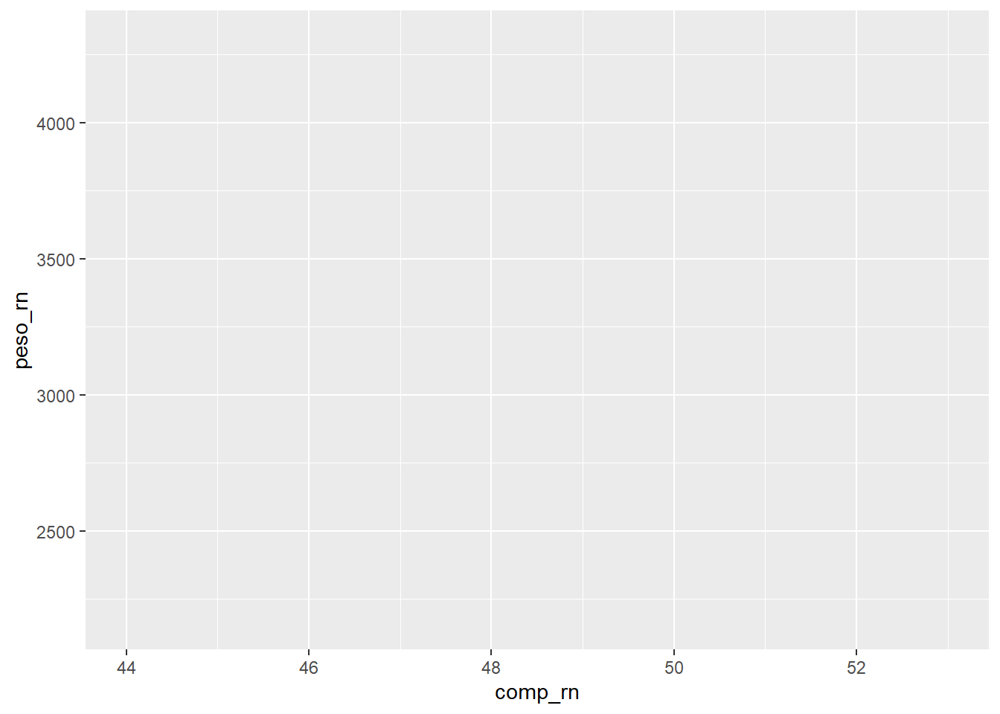
A seguir, adiciona-se 3 a camada dos pontos que usa a geometria geom_point() para criar um gráfico de dispersão (Figura 8.2).
3 O adicionar aqui é literal, pois isto é feito com o sinal (+).
dados_100|>
ggplot(aes(x = comp_rn, y = peso_rn)) +
geom_point()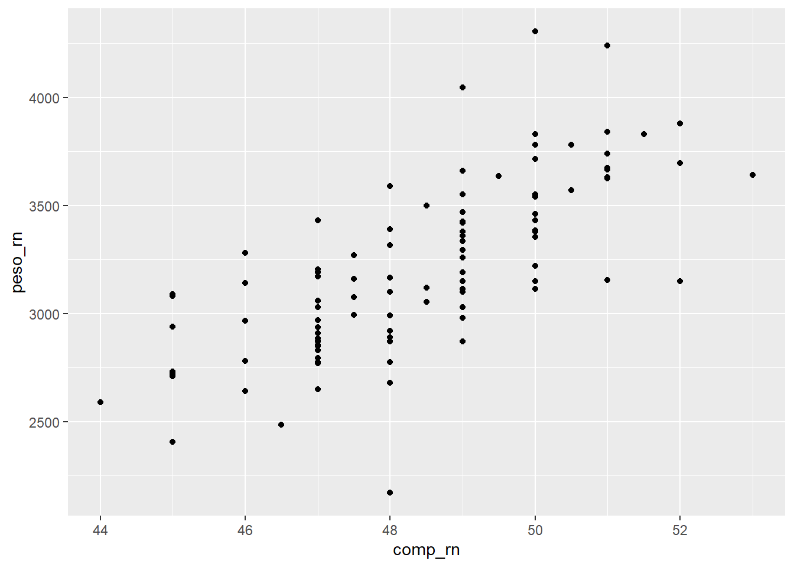
Como quase tudo no R, existem diversos modos de se chegar ao mesmo resultado. O aes() e os dados (data) podem ser definidos na camada ggplot() ou na geom.
ggplot(data = dados_100) +
geom_point(aes(x = comp_rn, y = peso_rn))
ggplot() +
geom_point(data = dados_100, aes(x = comp_rn, y = peso_rn))A saída de qualquer dos códigos acima é igual ao da Figura 8.2.
A Figura 8.2 mostra um gráfico de dispersão ainda sem um aspecto elegante, mas com as informações necessárias. Tem este fundo acinzentado que não é do agrado da maioria, além de não apresentar os rótulos das variáveis de forma mais clara, mais adequada.
8.4.1.1 Customização do gráfico de dispersão
A geometria geom_point() tem múltiplas opções de customização, através de seus argumentos:
color: a cor do traço, o contorno do ponto
stroke: a largura do traço no ponto
fill: cor da parte interna do ponto
shape: formato do marcador (Figura 8.3)
alpha: transparência do ponto, varia de 0 a 1, 0 é totalmente transparente; 1 = opaco.
size: tamanho do ponto
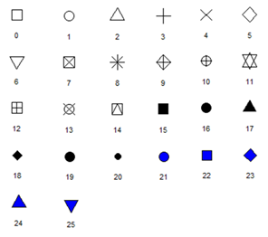
Para definir um tamanho uniforme para todos os pontos do gráfico, basta especificar um valor numérico no argumento size 4 da função geom_point(), como por exemplo size = 1.5 (padrão). Para melhor visualização, será escolhido size = 3 ou 4. O mesmo princípio se aplica à cor. O argumento color (vai colorir o contorno dos pontos) e argumento fill para a cor de preenchimento do ponto. A escolha das cores depende do gosto pessoal, na Seção 8.5, serão mostrados alguns princípios que auxiliam esse processo. Para alterar o formato dos pontos, usar o argumento shape, conforme as opções na Figura 8.3. Somente os formatos 21 a 25 permitem preenchimento. No exemplo, será usado shape = 21 que tem borda preta (controlada pelo stroke = 1. Nesse caso, é possível adicionar o argumento para definir a cor interna do ponto, ou seja, uma cor fixa (fill = "tomato").
4 O valor de size é numérico e representa o diâmetro aproximado do ponto em mm.
ggplot(data = dados_100,
mapping = aes(x = comp_rn, y = peso_rn)) +
geom_point(fill ="tomato",
alpha = 1,
shape = 21,
size = 3,
stroke =1)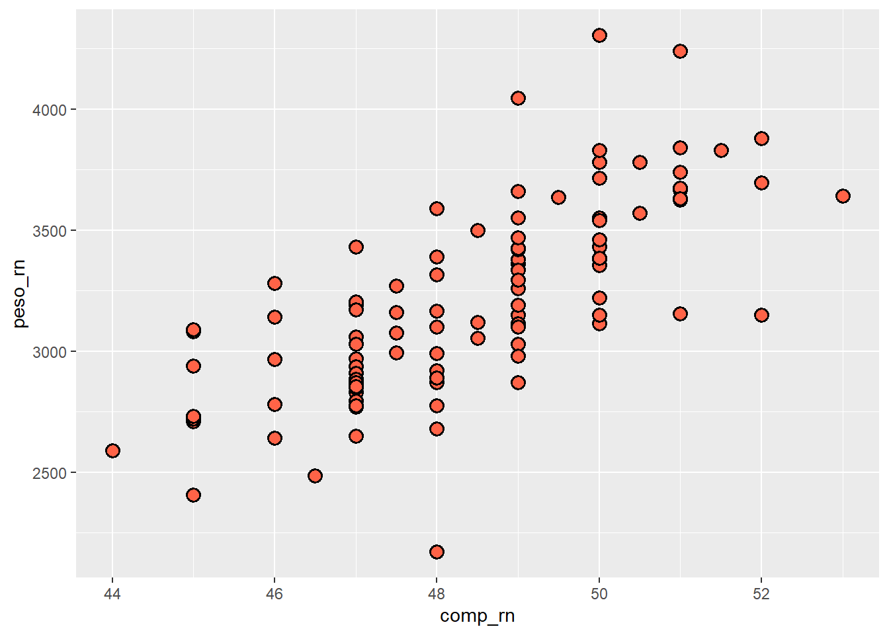
8.4.1.2 Lidando com a sobreposição dos pontos
Na Figura 8.4 , a modificação realizada melhorou o aspecto do gráfico. Entretanto, os pontos estão se sobrepondo, porque o comprimento dos recém-nascidos, apesar de ser uma variável numérica contínua, está registrado no conjunto de dados como discreta e existem vários com o mesmo comprimento. Nesse caso, a solução para evitar a sobreposição, é provocar um pequeno deslocamento aleatório dos pontos, tornando o gráfico mais legível. Isto é feito, embutindo o jitter (espalhamento) com um argumento dentro do geom_point(), o position = position_jitter (width = 0.2, height = 0). O argumento width controla o deslocamento horizontal (eixo x); height controla o deslocamento vertical (eixo y). No exemplo (Figura 8.5), os pontos serão espalhados horizontalmente, mantendo a posição vertical. Será usado o argumento width = 0.2 que espalha os pontos de forma leve, sem alterar o eixo y.
ggplot(data = dados_100,
mapping = aes(x = comp_rn, y = peso_rn)) +
geom_point(position = position_jitter(width = 0.2, height = 0),
fill ="tomato2",
shape = 21,
alpha = 1,
size = 3,
stroke = 1) 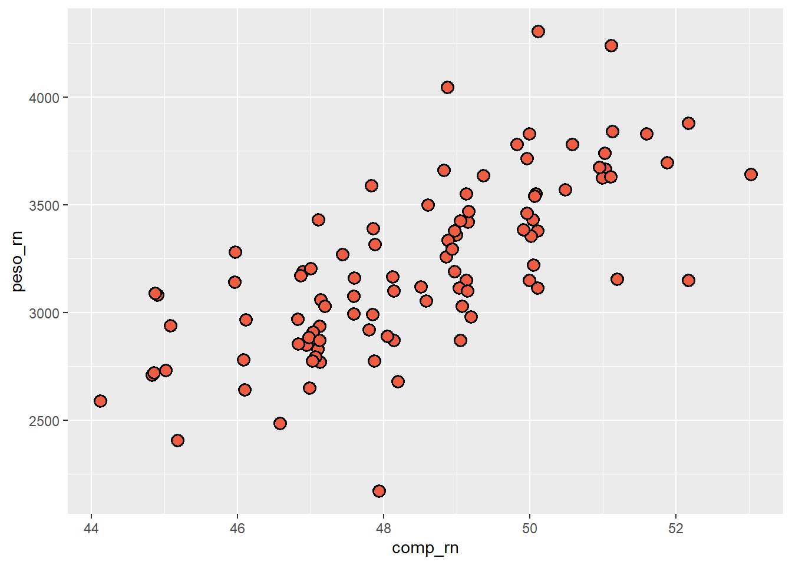
8.4.1.3 Modificando os títulos dos eixos
A forma mais simples e recomendada de mudar o nome principal dos eixos é utilizando labs() como uma nova camada.
ggplot(data = dados_100,
mapping = aes(x = comp_rn, y = peso_rn)) +
geom_point(position = position_jitter(width = 0.2, height = 0),
fill ="tomato2",
shape = 21,
alpha = 1,
size = 3,
stroke = 1) +
labs(x = "Comprimento do Recém-nascido (cm)",
y = "Peso do Recém-nascido (g)") 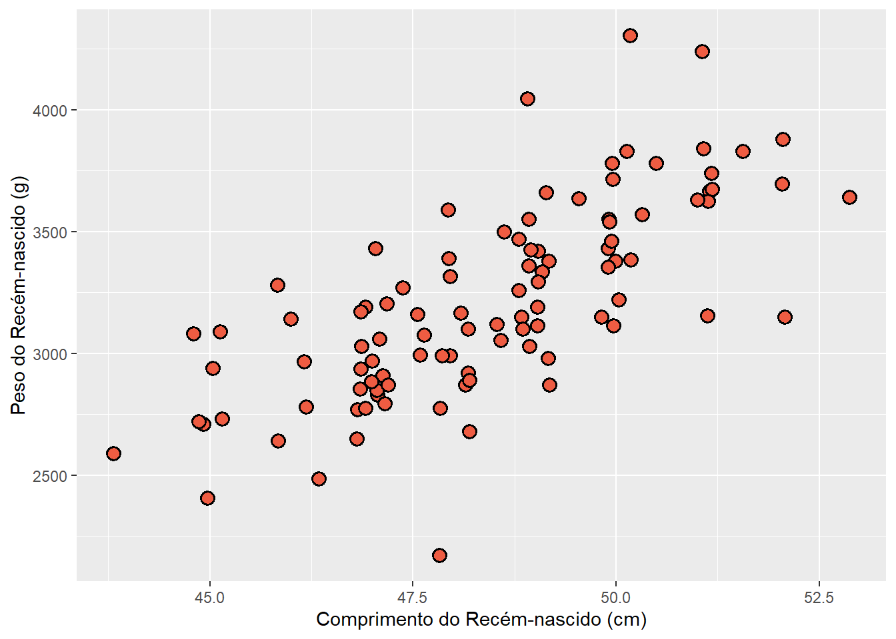
Na Figura 8.6, observa-se que os rótulos, agora definem claramente para o leitor a que eles se referem.
8.4.1.4 Mudando o tema
A Figura 8.6 já é um gráfico bem aceitável, apesar de o autor implicar muito com o fundo cinza – theme_gray(). Essa cor acinzentada padrão do ggplot2 pode ser alterada pela definição de outro tema integrado, entre muitos, como o theme_bw() que usa um fundo branco e linhas finas de grade de cor cinza. Outro tema interessante é o theme_classic() que é um tema de aparência clássica, com linhas dos eixos x e y e sem linhas de grade. Foi adicionado também o argumento base_size = 13, para modificar o tamanho das letras.
Para ver outras possibilidades acesse Completes themes - ggplot2.
O gráfico da Figura 8.6 com a adição do theme_bw() e aumento do tamanho das letras, pode ser observado na Figura 8.7.
ggplot(data = dados_100,
mapping = aes(x = comp_rn, y = peso_rn)) +
geom_point(position = position_jitter(width = 0.2, height = 0),
fill ="tomato",
shape = 21,
alpha = 1,
size = 3,
stroke =1) +
labs(x = "Comprimento do Recém-nascido (cm)",
y = "Peso do Recém-nascido (g)") +
theme_bw(base_size = 13)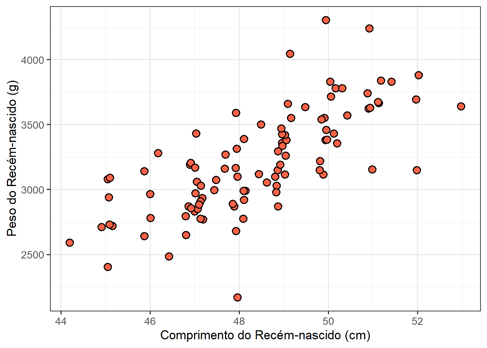
O gráfico mostra, de forma direta, que bebês mais compridos tendem a pesar mais. Há uma correlação positiva clara entre comprimento e peso dos recém‑nascidos.
8.4.2 Histograma
O histograma é uma ferramenta gráfica que fornece informações sobre o formato da distribuição e dispersão dos dados, permitindo verificar se existe ou não simetria. É usado para dados contínuos.
No histograma, as frequências observadas são representadas por intervalos de classes de ocorrência que estão no eixo x e a altura das barras, representando a frequência de cada intervalo, no eixo y. A área de cada barra é proporcional à porcentagem de observações de cada intervalo. O geom_histogram() é a geometria para a construção de um histograma. Aqui, há necessidade apenas do eixo x, pois existe uma única variável. A execução do comando retorna a distribuição dessa variável.
Os dados para plotar um histograma, serão provenientes do mesmo dataframe dados_100 , utilizado na Seção 8.4.1 . A lógica é a mesma do gráfico de dispersão. A variável, usada para construção de um histograma simples, é dados_100$peso_rn .
ggplot(dados_100, aes(x=peso_rn)) +
geom_histogram()+
labs(x = " Peso dos Recém-Nascidos (g)",
y = "Frequência") +
theme_bw(base_size = 13)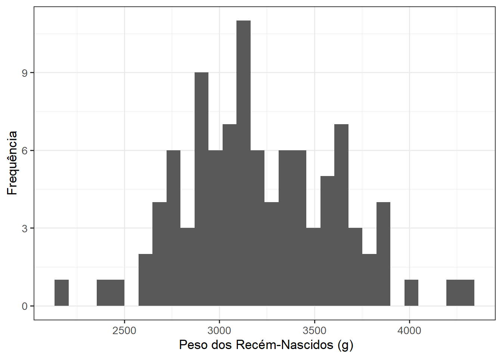
A aparência do histograma da Figura 8.8 permite ter uma ideia da distribuição e simetria dos dados, mas não está com um aspecto agradável, amigável. Mesmo que ele expresse corretamente a sua mensagem, essa pode ser prejudicada por uma má aparência.
O histograma recebeu uma variável numérica (no caso, o peso dos recém-nascidos) e a divide em vários “compartimentos”, os intervalos, representados pelas barras. A escolha do tamanho (amplitude) do intervalo é de extrema importância para a aparência do histograma.
O geom_histogram() tem um argumento, denominado binwidth que permite alterar a amplitude do intervalo. O binwidth é um intervalo e sua unidade é igual a da variável que se está “histogramando”. No exemplo, foi usado o peso do recém-nascido (g). Se o objetivo são intervalos de 100 em 100 gramas, o binwidth será igual a 100 (Figura 8.9).
ggplot(dados_100, aes(x=peso_rn)) +
geom_histogram(binwidth = 100,
fill = "chartreuse",
color = "darkgreen")+
labs(x = "Peso dos Recém-Nascidos (g)",
y = "Frequência") +
theme_bw(base_size = 13)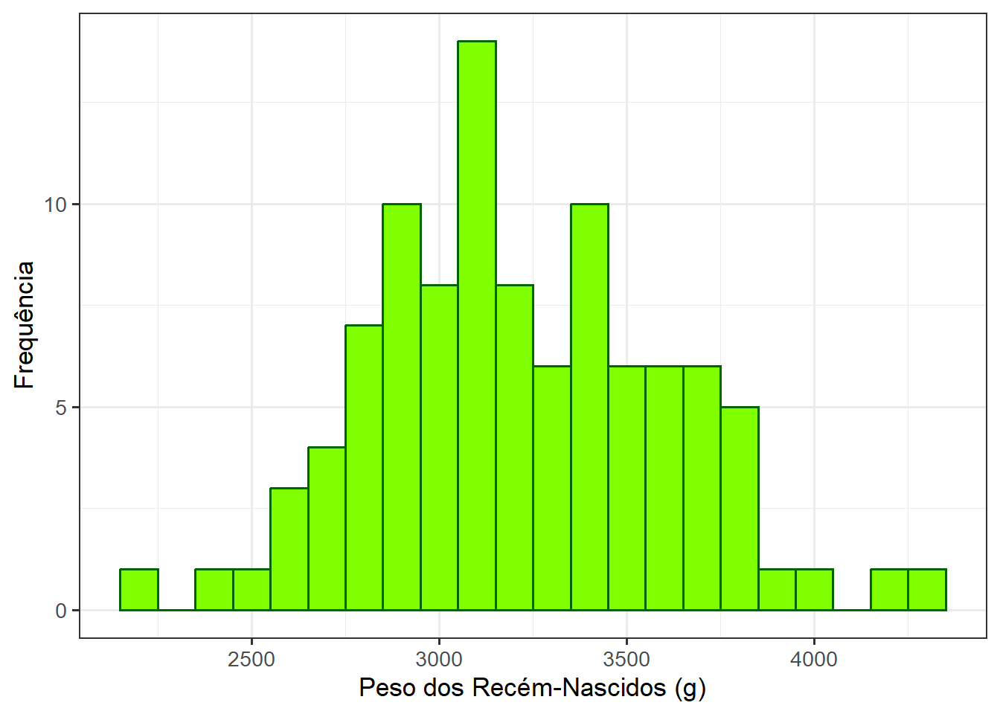
Uma outra maneira, é usar bins que agrupa em intervalos de mesmo tamanho. Por exemplo bins = 30, o geom_histogram() dividirá em 30 intervalos iguais, gerando um histograma como o da Figura 8.10, onde não foi especificado bins nem binwidth, pois este é padrão.
Junto com a alteração dos intervalos, modificou-se a cor de preenchimento (fill) e bordas (color) das barras (Figura 8.10 ).
ggplot(dados_100, aes(x=peso_rn)) +
geom_histogram(bins = 30,
fill = "chartreuse",
color = "darkgreen")+
labs(x = "Peso dos Recém-Nascidos (g)",
y = "Frequência") +
theme_bw(base_size = 13)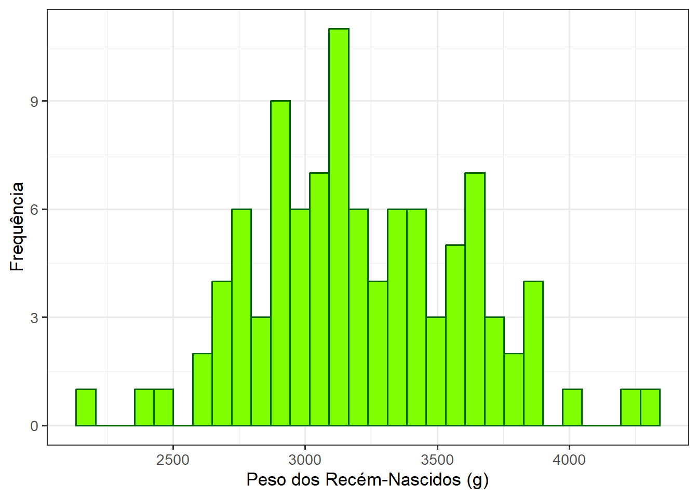
Com frequência se observa um histograma com curva normal sobreposta (Figura 8.11) para facilitar a comparação dos dados com a distribuição normal. Isso pode ser conseguido com um código que usa função stat_function() para a construção da curva normal, baseada nos dados (média e desvio padrão da variável peso_rn) e a função after_stat(density), colocada na estética do histograma, no eixo y, para substituir a frequência (contagem) pela densidade de probabilidade (veja Seção 9.6). O restante do código somente estabelece que a linha da curva será tracejada (linetype = “dashed”), de cor vermelha (color = “red”) e com tamanho 1 (linewidth = 1).
ggplot(dados_100) +
geom_histogram(aes(x = peso_rn,
y = after_stat(density)),
binwidth = 100,
fill = "chartreuse",
color = "darkgreen") +
stat_function(fun = dnorm,
args = list(mean = mean(dados_100$peso_rn),
sd = sd(dados_100$peso_rn)),
linetype = "dashed",
linewidth = 1,
color = "red") +
labs(x = "Peso do Recém-Nascido (g)",
y = "Densidade de Probabilidade") +
theme_bw(base_size = 13)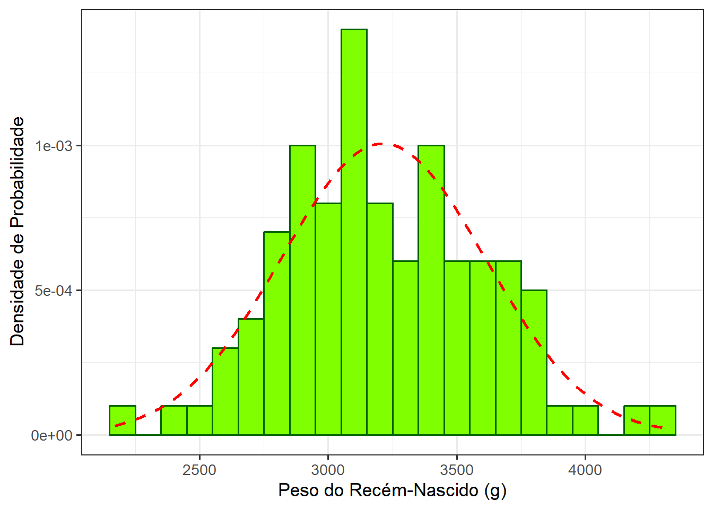
Na Figura 8.11, se observa que os pesos dos recém-nascidos se ajustam razoavelmente à curva normal.
8.4.3 Boxplot
O boxplot é uma representação gráfica de um resumo eficaz, de fácil compreensão, de uma ou mais variáveis numéricas. Fornece uma análise visual da posição, dispersão, simetria, caudas e valores discrepantes (outliers) do conjunto de dados (Figura 8.12).
Posição – Em relação à posição dos dados, observa-se a linha central do retângulo (a mediana ou segundo quartil).
Dispersão – A dispersão dos dados pode ser representada pelo intervalo interquartil (IIQ), tamanho da caixa, que é a diferença entre o terceiro quartil (3ºQ) e o primeiro quartil (1ºQ), ou ainda pela amplitude que é calculada da seguinte maneira: valor máximo – valor mínimo. Embora a amplitude seja de fácil entendimento, o intervalo interquartil é uma estatística mais robusta para medir variabilidade uma vez que não sofre influência de outliers.
Simetria – Um conjunto de dados que tem uma distribuição simétrica, terá a linha da mediana no centro do retângulo. Quando a linha da mediana está próxima ao primeiro quartil, os dados são assimétricos positivos e quando a posição da linha da mediana é próxima ao terceiro quartil, os dados são assimétricos negativos. Vale lembrar que a mediana é a medida de tendência central mais indicada quando os dados possuem distribuição assimétrica, uma vez que a média aritmética é influenciada pelos valores extremos.
Caudas – As linhas que vão do retângulo até aos outliers podem fornecer o comprimento das caudas da distribuição.
Valores atípicos (Outliers) – Os valores atípicos indicam possíveis valores discrepantes. No boxplot, as observações são consideradas atípicas quando estão abaixo ou acima dos limites superior e inferior. O limite de detecção de valores atípicos (outliers) é construído utilizando o intervalo interquartil, dado pela distância entre o primeiro e o terceiro quartil. Sendo assim, os limites inferior e superior de detecção de outlier são dados por:
o Limite Inferior: 1ºQ – (1,5 * IIQ);
o Limite Superior: 3ºQ + (1,5 * IIQ). Tanto o limite superior como o inferior são representados por (º).
os Valores extremos: são valores que estão acima ou abaixo de 3 vezes o IIQ e são representados por (*).
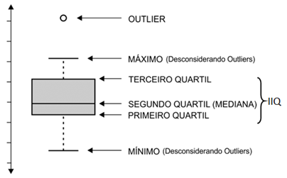
Os boxplots são construídos com o geom_boxplot(). Deve-se especificar uma variável quantitativa para o eixo y e uma variável qualitativa para o eixo x (grupo). Se não houver, variável x e tem-se apenas um vetor de valores numéricos, então, ignora-se a variável x 5.
5 Informar ao R que não será usada a variável x, usando x= NULL ou x= "" ou x = " " . O autor dá preferência por x = "". Assim, o ggplot2 entende que existe um objeto discreto no eixo x e o boxplot é desenhado dentro do espaço reservado para essa categoria. Isto permite o uso do argumento width para controla a largura dentro do espaço. Usando x = NULL, o ggplot2 entende que não existe eixo x e o gráfico vira um boxplot unidimensional, usando toda a largura disponível. Dessa maneira, torna o boxplot muito largo e o width é ignorado.
Para o exemplo de um boxplot, será usada a variável peso_rn do conjunto de dados dados_100 , carregados na Seção 8.4.1. O geom_boxplot() vazio gera um gráfico sem cores. Colocando o preenchimento fill = “skyblue”, tem-se um boxplot de cor azul céu (Figura 8.13).
ggplot(dados_100,
aes(x = "", y = peso_rn)) +
geom_boxplot(fill = "skyblue", alpha = 0.6, width = 0.4) +
labs (x = "", y = "Peso do Recém-nascido (g)") +
theme_bw(base_size = 13)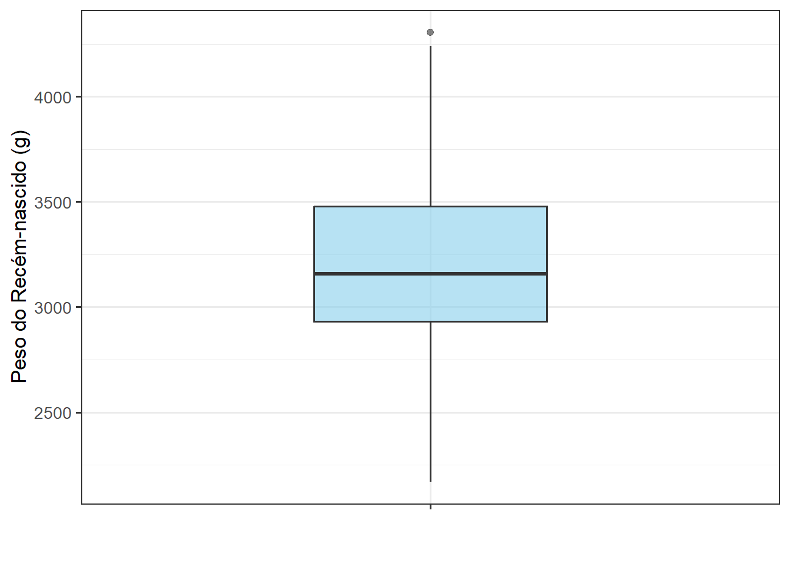
A Figura 8.13 mostra, de forma clara, a distribuição dos pesos dos recém‑nascidos. A Mediana está um pouco abaixo do centro da caixa, sugerindo leve assimetria. A caixa representa o intervalo interquartil, mostrando a concentração central dos pesos. Os “bigodes” indicam a dispersão, amplitude dos valores típicos. Há um valor acima do limite superior, indicando um recém‑nascido com peso bem maior que os demais (outlier).
Esse boxplot já tem um aspecto muito bom e pode ser considerado pronto. Entretanto uma versão melhor pode ser feita com algumas pequenas modificações, como remover o eixo x e seus ticks por completo, usando a função theme() com os argumentos, respectivamente, axis.text.x = element_blank() e axis.ticks.x = element_blank(), como recomendado por Wickham (1). Observe bem o eixo x, o tick desapareceu.
ggplot(dados_100, aes(x = " ", y = peso_rn)) +
geom_boxplot(fill = "skyblue", alpha = 0.6, width = 0.4) +
labs(x = NULL, y = "Peso do Recém-nascido (g)") +
theme_bw(base_size = 13) +
theme(axis.text.x = element_blank(),
axis.ticks.x = element_blank())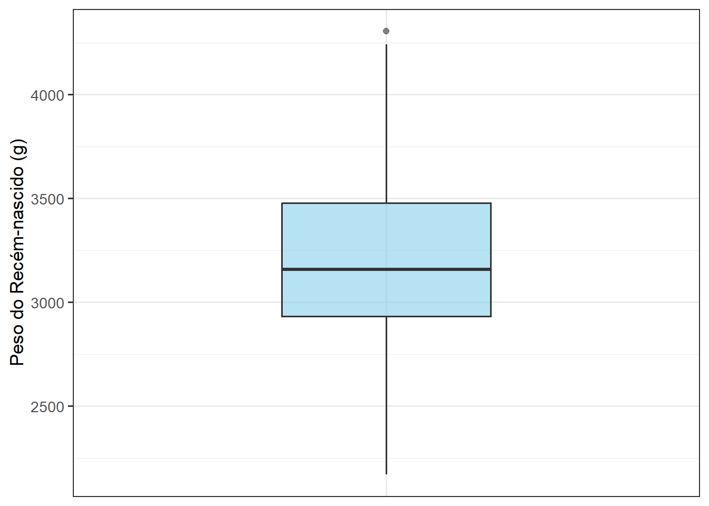
Na aparência do boxplot , é clássico, no estilo Tukey (4), o seu formato com os “bigodes” terminando em “T”, como mostra a Figura 8.12, e não um traço simples, padrão do ggplot2. Para modificar isso, pode-se criar uma nova camada de barra de erro, usando a função geom_errorbar(), antes de geom_boxplot(). Assim, como o boxplot passa ser a camada mais superficial, ele impede que se visualize a barra de erro na caixa (Figura 8.15), desde que ele seja opaco (remover ou zerar o argumento alpha). A função geom_errorbar() é a, normalmente, usada para barras de erro, no entanto, aqui ela está sendo utilizada com stat = "boxplot" 6, o que significa que os cálculos de estatística do boxplot 7 serão aplicados à barra de erro para desenhar os limites do boxplot. O argumento width = 0.1 ajusta a largura das barras de erro, tornando-as mais estreitas.
6 O padrão é stat = "identity", o que significa que os valores das barras de erro devem ser fornecidos diretamente no conjunto de dados, sem cálculos adicionais.
7 ggplot2 não está calculando médias e desvios‑padrão (como seria comum em barras de erro). Em vez disso, ele usa o stat do boxplot para obter:
ymin → limite inferior do whisker
lower → primeiro quartil (Q1)
middle → mediana
upper → terceiro quartil (Q3)
ymax → limite superior do whisker
ggplot(dados_100, aes(x = " ", y = peso_rn)) +
geom_errorbar(stat = "boxplot", width = 0.1) +
geom_boxplot(fill = "skyblue", width = 0.4) +
labs(x = NULL, y = "Peso do Recém-nascido (g)") +
theme_bw(base_size = 13) +
theme(axis.text.x = element_blank(),
axis.ticks.x = element_blank())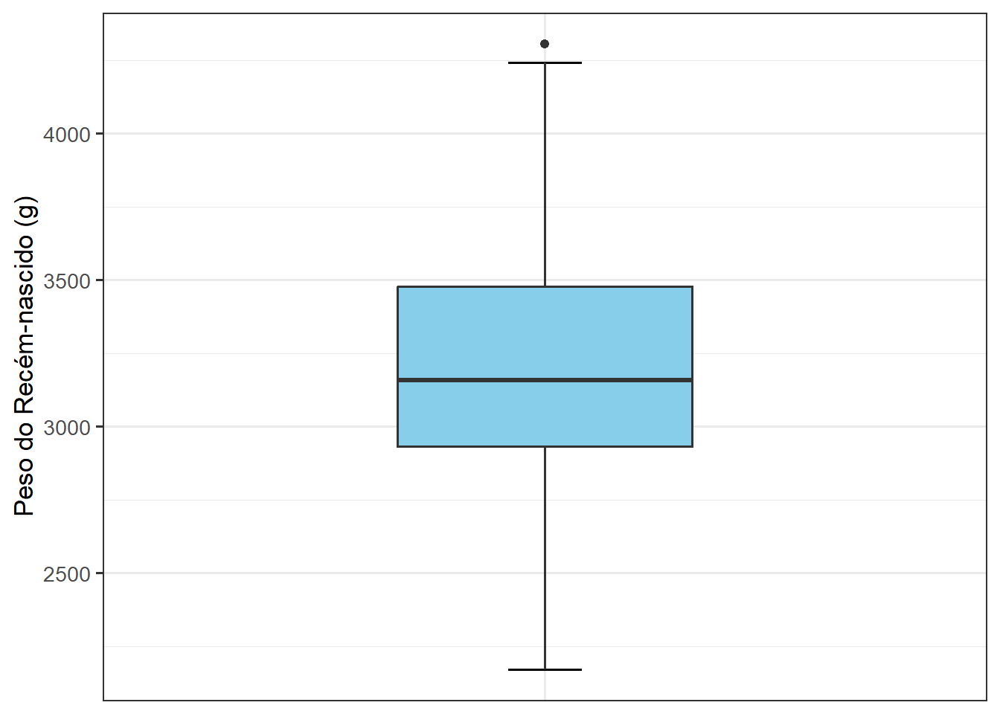
8.4.3.1 Múltiplos boxplots
Os boxplots são bastante úteis quando se compara dois grupos, tornando-se uma ferramenta conveniente para compreender rapidamente as diferenças entre esses grupos. Ao usar os boxplots para comparar grupos, deve-se ter cuidado, pois os resumos podem levar à perda de informação que pode induzir erros de interpretação. Considere os boxplots da Figura 8.16, comparando o comprimentos de recém-nascidos a termo masculinos e femininos, a mediana dos meninos é mais alta do que a das meninas. As meninas apresentam a mediana fora do centro das caixas, indicando um certo grau de assimetria. Mesmo sendo possível obter informações importantes sobre os dados, usando um boxplot, não se pode discernir a distribuição subjacente dos pontos de dados individuais dentro de cada grupo ou o número total de observações.
As cores dos boxplots serão definidas manualmente dentro do geom_boxplot(). Além disso, será adicionada a função theme(legend.position = "none") para remover a legenda, pois ela é redundante neste gráfico, uma vez que os sexos já estão mencionados no eixo x 8.
8 Aqui não se deve remover o eixo x, como feito na Figura 8.14, pois a sua presença é importante.
ggplot(dados_100, aes(x = sexo, y = comp_rn)) +
geom_errorbar(stat = "boxplot", width = 0.1) +
geom_boxplot(fill= c("#76CEF7", "#FFA2A4")) +
labs(x = NULL, y = "Comprimento dos Recém-Nascidos (cm)") +
theme_bw(base_size = 13) +
theme(legend.position = "none")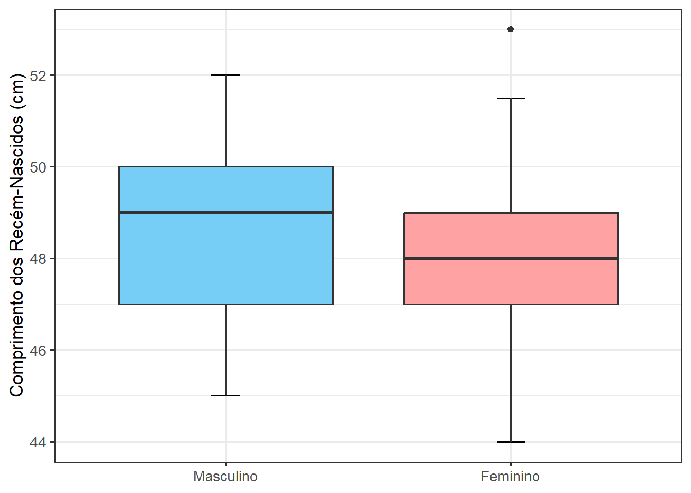
As cores #76CEF7 (azul claro) e #FFA2A4 (rosa) foram escolhidas, usando o Seletor de Cores do CorHexa (ver Seção 8.5).
8.4.3.2 Sobrepondo Jitter em um Boxplot
Combinar geom_jitter() com um boxplot permite exibir estatísticas resumidas enquanto mostra cada ponto dos dados bruto (Figura 8.17). Torna o boxplot mais esclarecedor com a visualização da distribuição dos dados. Não esquecer de colocar o argumento outliers = FALSE que remove os outliers.
Prestar atenção para o fato de que o jitter introduz um ruído aleatório e, por isso, em cada execução do código os pontos se distribuem em posições diferentes. Para tornar o jitter reprodutível usar uma seed (semente), set.seed(234) antes de executar o ggplot(), mas essa ação é opcional.
O geom_jitter() pode usar vários argumentos:
width: controla a quantidade horizontal do espalhamento;height: controla a quantidade vertical do espalhamento;size: controla o tamanho dos pontos;alpha: ajusta a transparência (por ex.:alpha = 0.5) para ajudar a visualizar as áreas com alta densidade.
set.seed(234)
ggplot(dados_100, aes(x = sexo, y = comp_rn)) +
geom_errorbar(stat = "boxplot", width = 0.1) +
geom_boxplot(fill= c("#76CEF7", "#FFA2A4"),
outliers = FALSE) +
geom_jitter(color="#7A7A7A",
size=1.5,
width = 0.1,
height = 0) +
labs(x = NULL, y = "Comprimento dos Recém-Nascidos (cm)") +
theme_bw(base_size = 13) +
theme(legend.position = "none")A semente (set.seed(234)) no início serve para garantir que os pontos criados pelo jitter fiquem com o mesmo espalhamento toda vez que forem gerados.
8.4.3.3 Boxplots horizontais
Para criar boxplots horizontais, adiciona-se a função coord_flip() à função geom_boxplot() para inverter os eixos. Em um boxplot padrão, a variável categórica está no eixo x e a variável numérica no eixo y. Com coord_flip(), as variáveis são invertidas, colocando a variável categórica no eixo y e a numérica no eixo x, resultando no boxplot horizontal da Figura 8.18.
ggplot(dados_100, aes(x = sexo, y = comp_rn)) +
geom_errorbar(stat = "boxplot", width = 0.1) +
geom_boxplot(fill= c("#76CEF7", "#FFA2A4")) +
coord_flip() +
labs(x = NULL, y = "Comprimento dos Recém-Nascidos (cm)") +
theme_bw(base_size = 13) +
theme(legend.position = "none")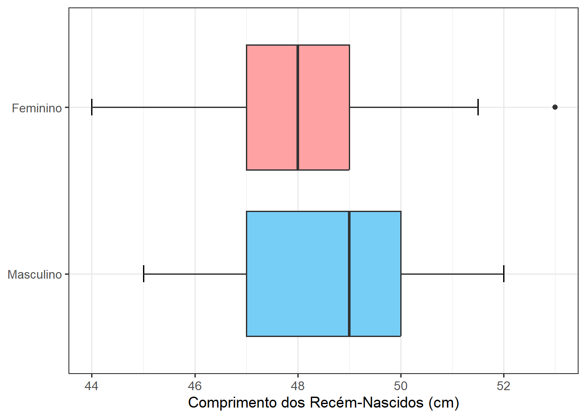
8.4.4 Gráfico de violino
Os gráficos de violino permitem visualizar a distribuição de uma variável numérica para um ou vários grupos. No ggplot2, são construídos com o geom_violin() e, com frequência, substituem os boxplots, principalmente, quando se tem uma amostra muito grande e usar o jitter no boxplot pode não ser eficaz, pois os pontos podem se sobrepor e tornar a figura ilegível.
Cada “violino” representa uma variável de agrupamento. A forma representa a estimativa de densidade de probabilidade da variável: quanto mais pontos de dados em um intervalo específico, mais largo será o violino para esse intervalo. É muito parecido com um boxplot, mas permite uma compreensão mais profunda da distribuição.
Para o exemplo prático, será usada uma amostra proveniente do conjunto de dados dados ( Seção 8.2), filtrando para as gestações a termo, ou seja, com idade gestacional (ig) > 37 semanas e < 42 semanas, dados_rnt. Serão utilizadas as variáveis peso_rn e categFumo, tabagismo entre as gestantes, de acordo com a intensidade (não fumante, fumante leve. fumante moderada, fumante pesada) . O objetivo é observar visualmente o impacto do tabagismo sobre os pesos dos recém-nascidos.
dados_rnt <- dados |>
dplyr::filter(ig >= 37 & ig < 42) |>
select(peso_rn, categFumo)Para construir o gráfico de violino, serão usados os argumentos trim = FALSE, para não aparar as caudas, e quantiles = c(0.25, 0.5, 0.75), e quantile.linetype = "dashed" para traçar os quartis (Figura 8.19). As cores das categoria foram definidas pelo ggplot2.
Reiterando, a função theme(legend.position = "none") será colocada para evitar que a legenda das categorias apareça, uma vez que ela é explicita no gráfico.
ggplot(dados_rnt, aes(x=categFumo, y=peso_rn, fill=categFumo)) +
geom_violin(trim = FALSE,
quantiles = c(0.25, 0.50, 0.75),
quantile.linetype = "dashed") +
labs(x = "Tabagismo Materno",
y = "Peso do Recém-Nascido (g)") +
theme_bw(base_size = 13) +
theme(legend.position = "none") 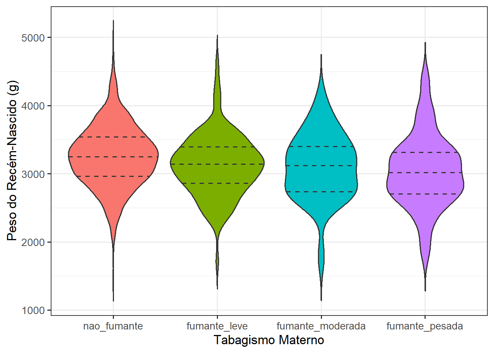
Uma alteração interessante que pode ser feita no gráfico de violino, é adicionar um boxplot, dentro do mesmo (Figura 8.20), faz o efeito do argumento quantiles(), usado na Figura 8.19 9. Facilita a interpretação e, na opinião do autor, é mais bonito e elegante. O argumento width = 0.5, na função geom_boxplot(), estabelece a largura do boxplot, evitando que o mesmo se estenda para fora do “violino”. Também deve ser usado argumento outliers = FALSE10 para que os outliers não apareçam.
9 A camada do geom_boxplot() deve ser colocada após a do geom_violin(), se sobrepõe a ela.
10 O padrão é outliers = TRUE.
ggplot(dados_rnt, aes(x=categFumo, y=peso_rn, fill=categFumo)) +
geom_violin(trim = FALSE) +
geom_boxplot(width = 0.5,
outliers = FALSE) +
labs(x = "Tabagismo Materno",
y = "Peso do Recém-Nascido (g)") +
theme_bw(base_size = 13) +
theme(legend.position = "none")A Figura 8.20 mostra uma tendência do peso do recém-nascido diminuir à medida que intensidade do fumo aumenta. O gráfico sugere que esta tendência não é significativa, pois as caixas se sobrepõem. Entretanto é necessário um teste estatístico 11 para verificar.
11 ANOVA de uma via
12 Consulte a construção da Figura 8.18
Para obter uma versão horizontal da Figura 8.19, chama-se a função coord_flip() 12 que permite inverter os eixos x e y e, assim, tornar a interpretação mais intuitiva, mais amigável .
Para interpretar um gráfico de violino, observar o seguinte:
Forma do violino, observando a largura em diferentes pontos para entender onde os dados se concentram.
A linha mediana e a caixa do boxplot associado indicam a mediana e o intervalo interquartil, respectivamente.
Se o violino é simétrico em torno da mediana, a distribuição dos dados é aproximadamente simétrica.
Se a parte superior do violino é mais larga, os dados podem ser assimétricos, inclinados para valores maiores.
Em múltiplas categorias, pode-se comparar rapidamente as distribuições. Diferentes formas e larguras entre as categorias fornecem uma visão clara das variações entre elas.
8.4.5 Gráfico de barras
O gráfico de barras é uma análogo do histograma, onde as barras, ao contrário deste, são separadas. Os gráficos de barra exibem a distribuição (frequências) de uma variável categórica através de barras verticais ou horizontais, ou sobrepostas 13. A função geom_bar() permite delinear o gráfico de barras da Figura 8.21.
13 Uma recomendação importante: Evite gráfico de barras em três dimensões!
Para os exemplos práticos, será usada uma amostra proveniente do conjunto de dados dados (Seção 8.2), manipulando as variáveis: categFumo , tabagismo materno, e categIdade , idade materna categorizada. Em outros exemplos de gráficos barras, serão usadas as variáveis fumo (fumante e não fumante), para (número de filhos anteriores) e sexo do recém-nascido.
O gráfico de barras inicial servirá para visualizar a prevalência (Seção 22.2.1) de fumo na gestação categorizada pela intensidade do fumo.
ggplot(data = dados) +
geom_bar(aes(x = categFumo,
y = after_stat(count/sum(count))))+
labs(x = "Tabagismo Materno",
y = "Proporção por categoria") +
theme_bw(base_size = 13)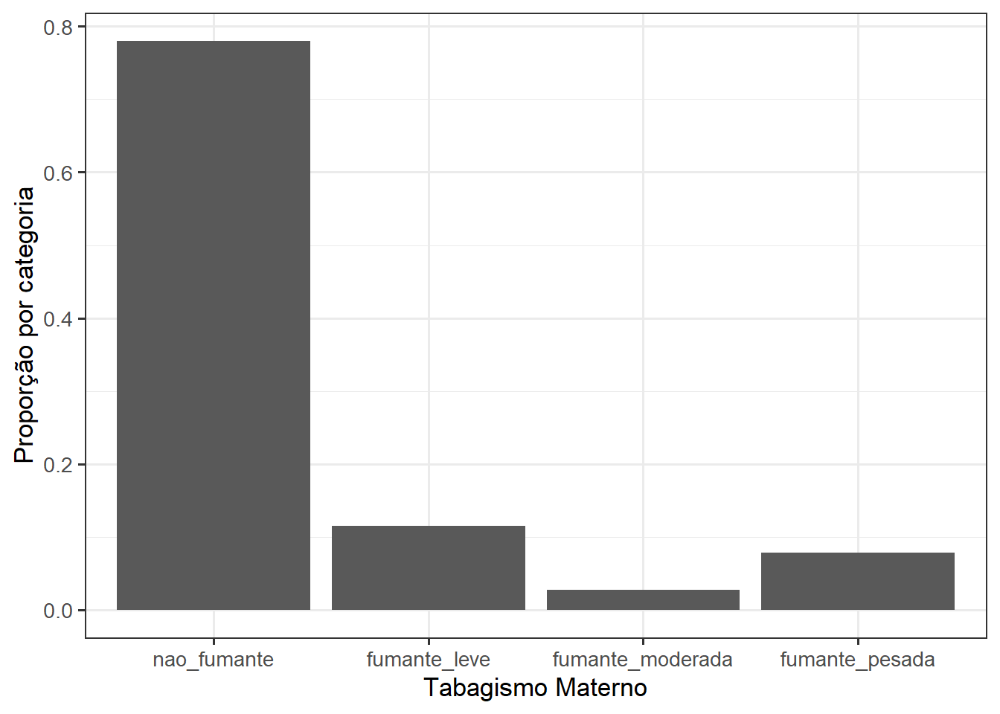
As cores de preenchimento das barras podem ser alteradas, de acordo com a variável categórica. As cores serão estabelecidas de acordo com o padrão do ggplot2 (Figura 8.22). O gráfico retornará uma legenda, mostrando o que representa cada cor. Ela é desnecessária porque fica explicito, no eixo x, o que cada barra representa. Portanto, é uma boa conduta remover a legenda com a função theme (legend.position = "none"), como já visto em outras ocasiões (boxplots e gráfico de violino):
ggplot(data = dados) +
geom_bar(aes(x = categFumo,
y = after_stat(count/sum(count)),
fill = categFumo))+
labs(x = "Tabagismo Materno",
y = "Proporção por categoria") +
theme_bw(base_size = 13) +
theme(legend.position = "none")
As cores padrão do ggplot2 podem ser alteradas, como será visto na Seção 8.5, escolhendo manualmente, ou usando uma paleta.
8.4.5.1 Proporção ou porcentagem
Na Figura 8.22, a unidade do eixo y encontra-se como uma proporção y = after_stat(count/sum(count)), ou seja, y = frequência por categoria/total de observações.
É possível modificar para porcentagem (Figura 8.23), empregando a função percent_format() do pacote scales. O código é praticamente igual, apenas acrescentar o argumento labels = percent_format(accuracy = 0.1, decimal.mark = “,”) dentro da função scale_y_continuous().
ggplot(data = dados) +
geom_bar(aes(x = categFumo,
y = after_stat(count/sum(count)),
fill = categFumo))+
scale_y_continuous (labels = percent_format (accuracy = 0.1,
decimal.mark = ",")) +
labs(x = "Tabagismo Materno",
y = "Porcentagem por categoria") +
theme_bw(base_size = 13) +
theme(legend.position = "none")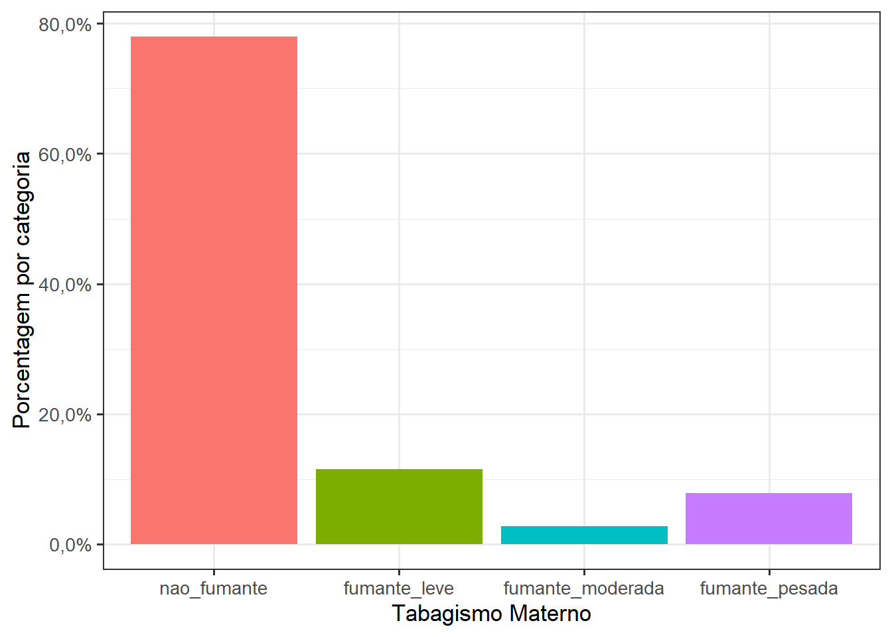
8.4.5.2 Controle da largura da barra
Para controlar a largura e o espaço entre as barras, num gráfico de barras no ggplot2, usar o argumento width dentro da função geom_bar(), definindo um valor entre 0 e 1. Um valor de 1 representa a largura total, ou seja, não haverá espaço entre as barras, como no histograma.
Como exemplo, será alterado a largura das barras do gráfico da figura Figura 8.23 . Se o objetivo é que as barras sejam mais estreitas e com mais espaço entre elas, deve-se definir um valor para width inferior a 0.9 (padrão). Na Figura 8.24, será usado width = 0.5.
ggplot(data = dados) +
geom_bar(aes(x = categFumo,
y = after_stat(count/sum(count)),
fill = categFumo),
width = 0.5)+
labs(x = "Tabagismo Materno",
y = "Proporção por categoria") +
theme_bw(base_size = 13) +
theme(legend.position = "none")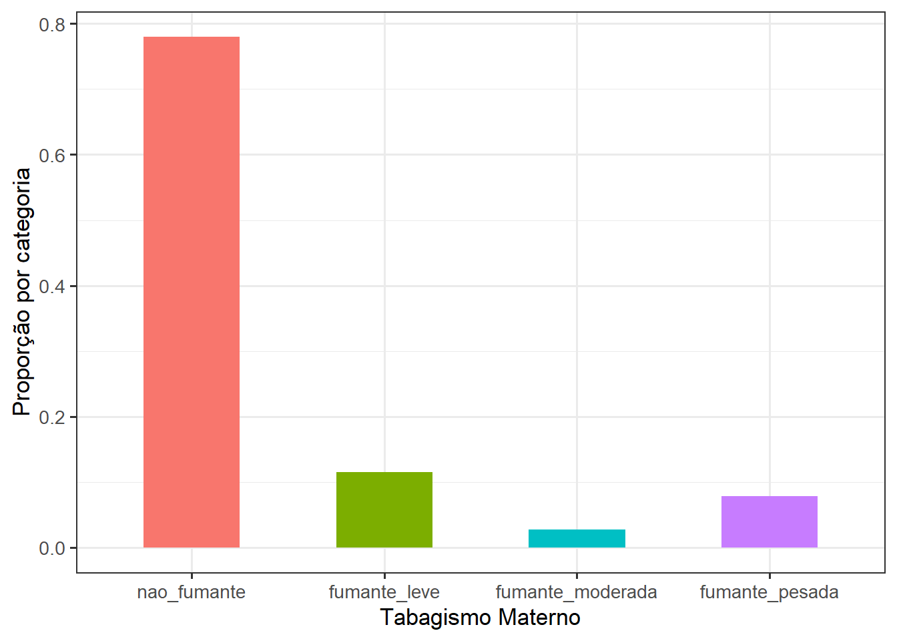
Exercício
Qual a diferença entre geom_bar() e geom_col()?
Construir o mesmo gráfico de barras da Figura 8.24, usando a geom_col().
Resposta
A
geom_bar()conta as ocorrências e usa a altura para representar essa contagem, enquantogeom_col()usa a altura para representar o valor especificado na estética y . Ambas as funções aceitam o argumentowidth. Enquanto ogeom_bar()com aafter_stat()calcula os valores automaticamente, ogeom_col()exige que se forneça os valores de y (as proporções) diretamente.
# 1) Calcular proporções por categoria
dados_prop <- dados |>
count(categFumo) |>
mutate(prop = n / sum(n))
dados_prop# A tibble: 4 × 3
categFumo n prop
<fct> <int> <dbl>
1 nao_fumante 1067 0.780
2 fumante_leve 157 0.115
3 fumante_moderada 37 0.0270
4 fumante_pesada 107 0.0782# 2) Construir o gráfico com geom_col()
ggplot(data = dados_prop) +
geom_col(aes(x = categFumo,
y = prop,
fill = categFumo),
width = 0.9) +
labs(x = "Tabagismo Materno",
y = "Proporção por categoria") +
theme_bw(base_size = 13) +
theme(legend.position = "none")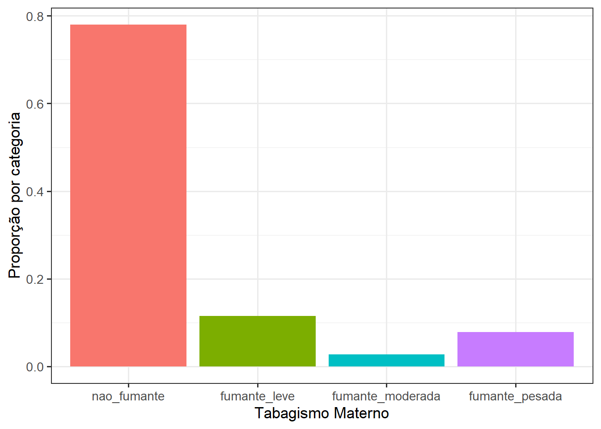
8.4.5.3 Gráfico de barras empilhadas
O gráfico de barras empilhadas (contagem) é ideal para visualizar a proporção de cada grupo dentro de uma categoria. A altura total da barra representa a contagem total para a variável no eixo x, e as cores dentro da barra mostram a distribuição da segunda variável.
Para criá-lo, mapear a primeira variável para o eixo x e a segunda variável para a estética fill. A função geom_bar() faz o empilhamento por padrão.
Serão utilizados os mesmos dados (Seção 8.2) manipulados nos gráficos de barra até agora. Com o objetivo de ver a proporção de tabagismo por faixa etária das gestantes da maternidade, serão usadas as variáveis categIdade e fumo . Como aprimoramentos, se pretende colocar as porcentagens de fumantes em cada uma das faixas etária no topo das barras para facilitar a leitura do gráfico.
Em primeiro lugar, calcular as proporções de fumante em cada uma das faixas etárias. Após realizado o cálculo das proporções de fumantes em cada faixa etária, constrói-se o gráfico. Para colocar as porcentagens no gráfico 14, será usada a geometria geom_text(), informando essas porcentagens e a localização no eixo x e y, usando o argumento vjust = -0.5 15, resultando na Figura 8.26.
14 Este acréscimo das porcentagens dentro do gráfico é opcional. Para fazer o mesmo gráfico sem esta informação, não há necessidade dos cálculos das proporções e nem do geom_text() que deve ser removido.
15 vjust = -0.5 posiciona o rótulo levemente acima do topo da barra, em unidades de altura do texto — independente da escala dos dados.
proporcoes_fumo <- dados |>
group_by(categIdade, fumo) |>
summarise(n = n(), .groups = "drop") |>
group_by(categIdade) |>
mutate(total_faixa = sum(n),
proporcao_fumo = n / total_faixa) |>
filter(fumo == "Fumante")
ggplot(dados, aes(x = categIdade, fill = fumo)) +
geom_bar(color = "#000000") +
scale_fill_manual(values = c("#000000", "#FFFFFF")) +
geom_text(data = proporcoes_fumo,
aes(x = categIdade,
y = total_faixa,
label = scales::percent(proporcao_fumo, accuracy = 0.1)),
size = 4,
vjust = -0.5,
color = "#000000") +
scale_y_continuous(expand = expansion(mult = c(0, 0.1))) +
labs(x = "Faixa Etária", y = "Frequência", fill = NULL) +
theme_classic(base_size = 13) +
theme(legend.position = "top")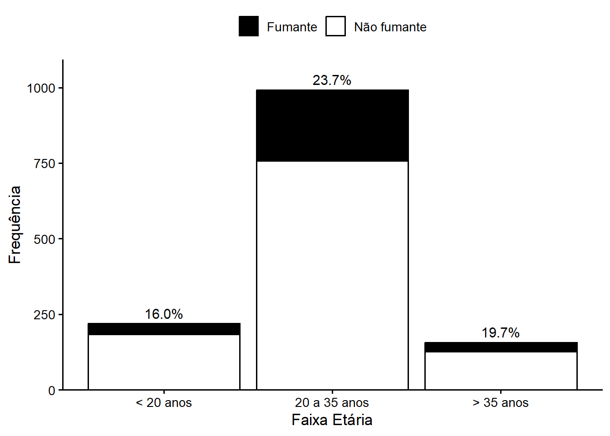
8.4.5.4 Gráfico de barras lado a lado
O gráfico de barras lado a lado (ou agrupado) é útil para comparar diretamente a contagem de cada grupo entre as categorias. As barras de uma mesma categoria são dispostas lado a lado para facilitar a comparação visual. Para criá-lo, se faz de maneira semelhante das barras empilhadas. Mapear a primeira variável para o eixo x e a segunda para a estética fill e adicionar o argumento position = "dodge" dentro do geom_bar(). Este argumento diz ao ggplot2 para não empilhar as barras, mas sim colocá-las lado a lado.
O geom_text () usa position_dodge() para replicar o comportamento das barras. O argumento width = 0.9 é o valor padrão para a largura das barras no ggplot2 e garante um alinhamento perfeito. O gráfico de barras lado a lado é, portanto construído assim:
- Inicialmente, calcula-se as proporções das categorias 16:
16 Não é necessário calcular posicao_y. O argumento vjust = -0.5 no geom_text() posiciona o rótulo acima de cada barra automaticamente, independente da escala dos dados.
prop_fumo <- dados |>
group_by(categIdade, fumo) |>
summarise(n = n(), .groups = "drop") |>
group_by(categIdade) |>
mutate(total_faixa = sum(n),
proporcao_fumo = n / total_faixa)
prop_fumo# A tibble: 6 × 5
# Groups: categIdade [3]
categIdade fumo n total_faixa proporcao_fumo
<fct> <fct> <int> <int> <dbl>
1 < 20 anos Fumante 35 219 0.160
2 < 20 anos Não fumante 184 219 0.840
3 20 a 35 anos Fumante 235 992 0.237
4 20 a 35 anos Não fumante 757 992 0.763
5 > 35 anos Fumante 31 157 0.197
6 > 35 anos Não fumante 126 157 0.803- Com esses dados, constrói-se o gráfico:
ggplot(dados, aes(x = categIdade, fill = fumo)) +
geom_bar(position = "dodge",
color ="#000000") +
scale_fill_manual(values = c("#000000","#FFFFFF")) +
geom_text(data = prop_fumo,
aes(x = categIdade,
y = n,
label = scales::percent(proporcao_fumo, accuracy = 0.1)),
size = 3.5,
vjust = -0.5,
color = "#000000",
position = position_dodge(width = 0.9)) +
scale_y_continuous (expand = expansion(mult = c(0, 0.10))) +
labs(x = "Faixa Etária",
y = "Frequência",
fill = NULL) +
theme_classic(base_size = 12) +
theme(legend.position = "top")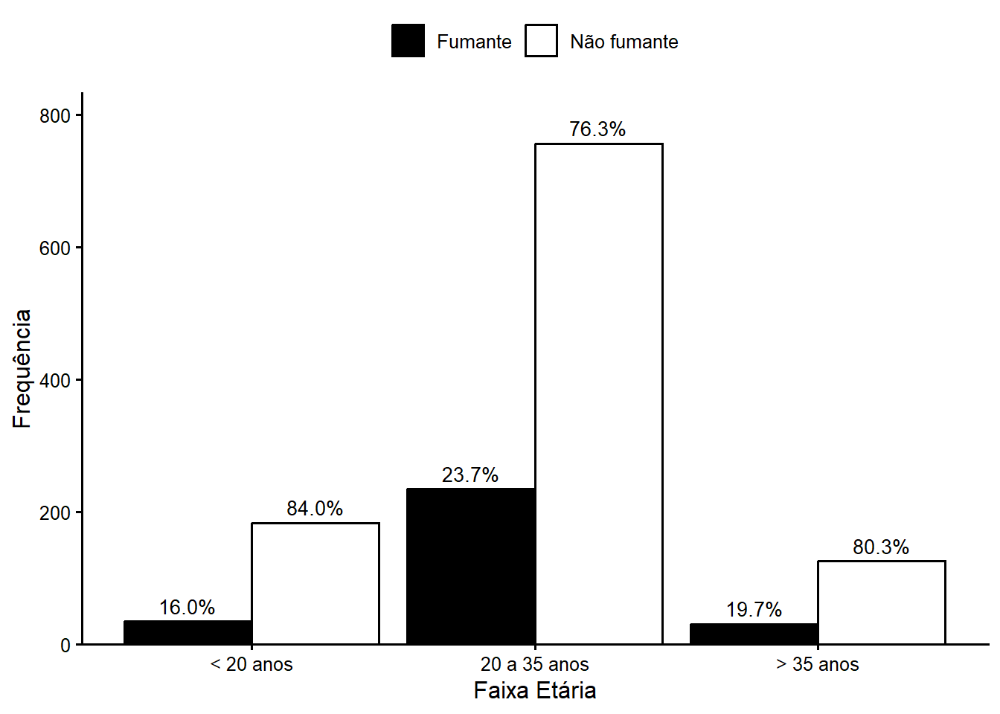
A Figura 8.27 mostra as porcentagens de fumantes em cada uma das categorias de uma forma bem clara.
8.4.5.5 Gráfico de barra para uma variável numérica discreta
Uma variável numérica discreta é um tipo de variável que assume valores inteiros, resultantes de contagens, e que não podem assumir valores fracionários entre eles. A medição ocorre através da contagem das observações (Seção 2.5). Para a representação gráfica, utiliza-se um gráfico de barras . O resultado é semelhante a um histograma com as barras separadas. Para o exemplo, serão usados os mesmos dados empregados na construção dos gráficos de barras empilhadas e lado a lado, provenientes do conjunto de dados dadosMater.xlsx (Seção 8.2). Nesses dados, existe a variável para que representa o número de filhos que a gestante teve antes do atual. É uma variável numérica discreta que será mostrada visualmente por gráfico de barras simples (Figura 8.28).
Importante
Apesar da variável para ser uma variável numérica discreta, para a construção do gráfico ela foi transformada em um fator para informar ao ggplot2 que todos os rótulos do eixo x (nº de filhos anteriores) devem aparecer, inclusive o referente aos 9 e 10 filhos anteriores, apesar de não existirem na amostra.
# Criar uma tabela com contagem completa, incluindo zeros
contagem <- as.data.frame(table(factor(dados$para, levels = 0:11)))
# Calcular proporção de cada barra
contagem$prop <- contagem$Freq / sum(contagem$Freq)
# Plotar
ggplot(contagem, aes(x = Var1, y = prop)) +
geom_bar(stat = "identity",
fill = "tomato", color = "gray30") +
geom_text(aes(label = scales::percent(prop, accuracy = 0.1),
y = prop + 0.01), size = 3.5, color = "black") +
scale_y_continuous (expand = expansion(mult = c(0, 0.10))) +
labs(x = "Número de filhos anteriores ao atual",
y = "Proporção") +
theme_classic(base_size = 13)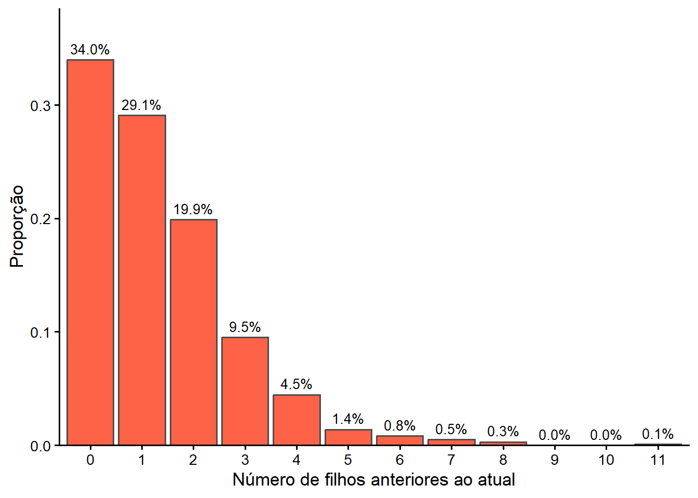
8.4.6 Gráfico de barra de erro
Um gráfico de barra de erro é uma ferramenta visual que mostra a variabilidade de dados em um ponto específico. Ele consiste em pontos ou barras que representam as médias (ou outras estatísticas) de um conjunto de dados, com linhas verticais (ou horizontais) que indicam o intervalo de confiança, o desvio padrão ou o erro padrão da média. Essas linhas verticais são conhecidas como “barras de erro”. Usado para comparar as médias de diferentes grupos, mostrando a variabilidade dentro de cada grupo. É visto com frequência em pesquisas científicas e publicações para apresentar os resultados experimentais com suas respectivas variabilidades. Entretanto, este tipo de gráfico é alvo de controvérsias em relação ao seu uso, recebendo bastante crítica porque gráficos de barras não exibem a distribuição dos dados e não adicionam informações além da transmissão direta no texto das médias e dos desvios padrão. Alguns, mais fervorosos dão a ele uma denominação pejorativa de gráfico de dinamite (5).
As barras de erro dão uma ideia geral de quão precisa é uma medição. O cenário para a construção de um gráfico de barra de erro é o tabagismo na gestação e o peso dos recém-nascidos, onde as barras representarão a média do peso ao nascer (g) e as barras de erro com intervalo de confiança de 95% (veja Capítulo 12), calculado usando média \(\pm\) margem de erro, onde a margem de \(erro = 1.96 × erro \ padrão\).
- Resumo dos dados: Após carregar os dados necessários (
dados_rnt), se fará um resumo dos mesmos que informará as respectivas médias, desvios padrão e margens de erro por grupo.
resumo <- dados |>
dplyr::filter(ig >= 37 & ig < 42) |>
select(peso_rn, sexo, fumo) |>
group_by(sexo, fumo) |>
summarise(n = n(),
media = mean(peso_rn, na.rm = TRUE),
dp = sd(peso_rn, na.rm = TRUE),
me = 1.96 * dp/sqrt(n),
min =min(peso_rn, na.rm = TRUE),
max =max(peso_rn, na.rm = TRUE),
.groups = 'drop')
print(resumo)# A tibble: 4 × 8
sexo fumo n media dp me min max
<fct> <fct> <int> <dbl> <dbl> <dbl> <dbl> <dbl>
1 Masculino Fumante 121 3177. 438. 78.1 1795 4410
2 Masculino Não fumante 470 3303. 453. 40.9 1425 4950
3 Feminino Fumante 110 2998. 503. 94.1 1715 4620
4 Feminino Não fumante 383 3190. 435. 43.6 2090 4485Construção do gráfico (Figura 8.29) , conforme explicado abaixo:
O gráfico inicia com a colocação a variável
sexono eixo x e média da variávelpeso_rnno y e estabelecendo cores diferentes para o fatorsexo;geom_bar(stat = “identity”usa os valores reais da média para a altura das barras,color = “black”estabelece a cor preta para o contorno das barras eposition_dodge(0.9)separa as barras lado a lado para cada grupo defumo;geom_point (position = position_dodge(0.9)adiciona um ponto sobre cada barra (pode ser útil para destacar a média). É opcional;geom_errorbar()adiciona a barra de erro acima da média, com base na barra de errome. Poderia ter sido usado o desvio padrão. O erro está opcionalmente colocado acima da barra, mas poderia ser acima e abaixo ;labs()define os rótulos dos eixos e da legenda;coord_cartesian(ylim = c(0, 3500))limita o eixo y de 0 a 3500, sem cortar dados fora desse intervalo. Entretanto, para reduzir a altura das barras, pode-se cortar dados, por exemplo começar em1000, 1500 ou, mesmo, 2000, uma vez que não existem recém-nascidos, nesta amostra, com menos de 2000 g e o foco é a média e o IC95%;scale_fill_manual(values = c("#F2F2F2","#F2FBFF"))estabelece as cores para os níveis defumo;scale_y_continuous( breaks = seq(0, 3500, 500) , expand = expansion(mult = c(0, 0.10)))- a primeira parte define os rótulos do eixo y de 500 em 500, começando em 0 17, a segunda adiciona um pequeno espaço acima das barras para não cortar os rótulos (adiante será discutido sobre isso);Por último colocou o tema clássico18 do
ggplot2com fonte maior para melhorar a leitura.
17 Modificar se no coord_cartesian() o valor inicial for alterado, por exemplo, 1000, 1500 ou 2000.
18 Pode ser qualquer tema, este fica bem por ser bem limpo, sem grades, apenas eixo x e y.
ggplot(resumo, aes(x=sexo, y=media, fill=fumo)) +
geom_bar(stat="identity", color="#000000",
position=position_dodge(0.9)) +
geom_point(position=position_dodge(0.9)) +
geom_errorbar(aes(ymin = media, ymax = media+me), width=0.2,
position=position_dodge(.9)) +
labs(x="",
y = "Peso do Recém-Nascido(g)",
fill = "") +
coord_cartesian(ylim = c(1500, 3500)) +
scale_fill_manual(values = c("#000000", "#FFFFFF")) +
scale_y_continuous (breaks = seq(1500, 3500, 500),
expand = expansion(mult = c(0, 0.10))) +
theme_classic(base_size = 13) +
theme(legend.position = "top")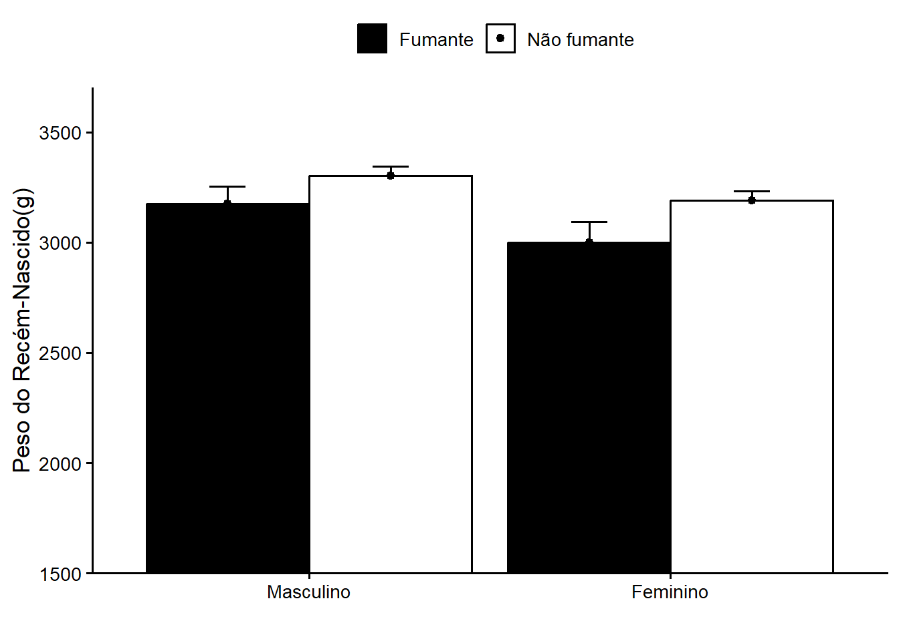
8.4.7 Gráfico de linha
Em diversas situações, há necessidade de visualizar os dados observados ao longo do tempo. A sua representação se dá, na maioria das vezes, por meio de um gráfico de linhas. O ggplot2 tem uma geometria, a geom_line() é utilizada para isso. Do mesmo modo que nos gráficos de dispersão, precisa-se definir o que representado nos eixos x e y.
Esse tipo de gráfico é muito útil para relatórios epidemiológicos e análises de sazonalidade.
Os dados usados nesta seção são provenientes do Painel de Hospitalizações de Síndrome Respiratória Aguda Grave (SRAG) da Secretaria da Saúde do Estado do Rio Grande do Sul. Esta base de dados encontra-se aqui em .CSV. Salve em seu diretório de trabalho e faça a leitura da seguinte maneira, garantindo que a variável anos seja um fator 19:
19 Isto permitira separar os anos por cores no gráfico.
dados_covid <- readr::read_csv2("dados/covid_rs.csv") |>
dplyr:: mutate (ano = as.factor(ano))
str(dados_covid)tibble [180 × 3] (S3: tbl_df/tbl/data.frame)
$ sem : num [1:180] 1 1 1 1 2 2 2 2 3 3 ...
$ ano : Factor w/ 4 levels "2023","2024",..: 1 2 3 4 1 2 3 4 1 2 ...
$ n_hosp: num [1:180] 377 168 185 145 242 144 151 129 219 149 ...ggplot(dados_covid, aes(x = sem, y = n_hosp, color = ano)) +
geom_line(linewidth = 1.2) +
geom_point(size = 2) +
scale_x_continuous(breaks = seq(1, 53, 2)) +
labs(
x = "Semana epidemiológica",
y = "Número de hospitalizações",
color = "Ano"
) +
theme_minimal(base_size = 14)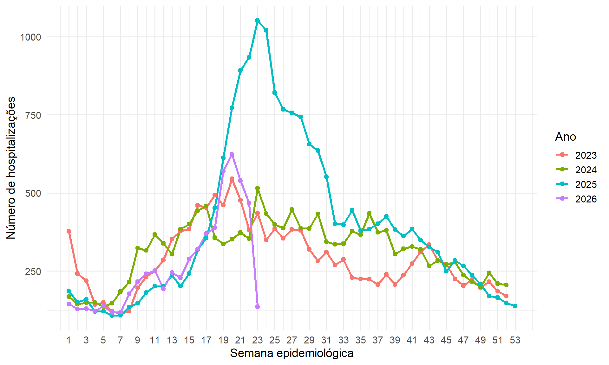
O ano de 2023 mostra um padrão típico pós-epidemia; em 2024 houve um aumento forte entre as semanas 7 e 17; em 2025 com uma onda muito intensa (picos acima de 1000 hospitalizações); em 2026 com dados ainda parcial, mas já mostrando tendência de aumento até a semana 23.
8.5 Manuseio das cores no ggplot2
Na Seção 8.4.1.1 foi introduzido o uso de cores no R. Agora, apesar deste assunto praticamente não ter limites, serão mostrados alguns princípios do manuseio das cores no ggplot2.
O R possui 657 cores integradas que permitem uma gama ampla de opções. Uma lista completa dos nomes dessas cores podem ser vistas, digitando, no RScript ou Console do RStudio, colors().
colors()Para escolher as cores pelo nome, pode-se visualizá-las de uma maneira fácil, acessando um guia completo aqui, criado pelo Dr. Ying Wei, do Departamento de Bioestatística da Universidade de Columbia, USA. Neste guia, as cores estão especificadas por seu nome em inglês.
Uma outra maneira de especificar as cores, é usar o sistema RGB ou hexadecimal. Esse sistema usa códigos no formato #RRGGBB, onde cada par representa a intensidade de vermelho (RR), verde (GG) e azul (BB) em valores hexadecimais de 00 a FF.
Cada par de letras controla a intensidade de uma cor primária (6)
#FF0000: Vermelho puro (Vermelho máximo, sem Verde ou Azul).#00FF00: Verde puro.#0000FF: Azul puro.#FFFFFF: Branco puro.#000000: Preto puro.
É possível adicionar mais dois dígitos no final (#RRGGBBAA) para controlar a opacidade (transparência), onde 00 é invisível e FF é cor sólida. A plataforma gratuita CorHexa tem um Seletor de Cores que é uma ferramenta extremamente útil para criar e ajustar cores facilmente e encontrar o seu código hexadecimal. Em HTML Color Codes existe modos de escolher a cor e copiar o código hexadecimal.
A mistura das cores cria outras cores conforme a Figura 8.31, a #FFFF00 (“yellow”) resulta da combinação de #FF0000 (“red”) e #00FF00 (“green”). Cada cor é descrita por três componentes (vermelho, verde e azul).
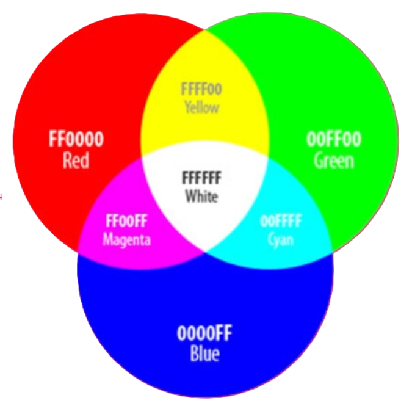
8.5.1 Cores por Variável (Mapeamento)
Para aplicar uma cor a todo o gráfico, defina color ou fill fora da função aes().
A Figura 8.7 é um exemplo de cores fixas, usando fill = "tomato" para o preenchimento.
Para que as cores representem categorias ou valores numéricos, passe o nome da variável dentro da função aes(). O preenchimento (fill) é colocado dentro da função; o contorno, se houver interesse em modificar, usar color fora da função aes(), no geom_point(). O ggplot2 criará automaticamente as legendas que , por padrão, aparecerá à direita 20. A Figura 8.32 é a Figura 8.7 modificada para ter cores diferentes de acordo com a categoria (sexo) e com legenda na parte superior.
20 Para modificar a posição da legenda foi usada a função theme(legend.position = "top").
ggplot(data = dados_100,
mapping = aes(x = comp_rn, y = peso_rn, fill = sexo)) +
geom_point(position = position_jitter(width = 0.2, height = 0),
shape = 21,
alpha = 1,
size = 3,
stroke =1) +
labs(x = "Comprimento do Recém-nascido (cm)",
y = "Peso do Recém-nascido (g)",
fill = "") +
theme_bw(base_size = 13) +
theme(legend.position = "bottom")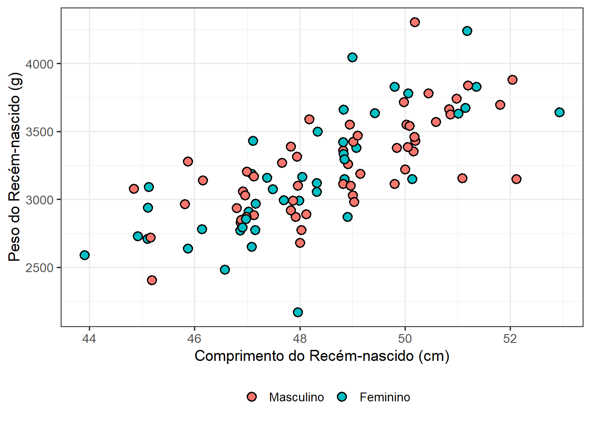
8.5.2 Ajustando Cores Categóricas (Discretas)
Para alterar as cores internas atribuídas automaticamente a grupos pelo ggplot2, como na Figura 8.32, usar as camadas scale_color_manual() ou scale_fill_manual().
Inicialmente, para que as cores fiquem bem amarradas às categorias (no caso, "Masculino" e "Feminino"), será utilizado um vetor cores_sexo com as cores azul e rosa, respectivamente, para os sexos masculino e feminino.
cores_sexo <- c("Masculino" = "#2b8cbe",
"Feminino" = "#f598a2") O código fica assim:
ggplot(data = dados_100,
mapping = aes(x = comp_rn, y = peso_rn, fill = sexo)) +
geom_point(position = position_jitter(width = 0.2, height = 0),
shape = 21,
alpha = 1,
size = 3,
stroke = 1) +
labs(x = "Comprimento do Recém-nascido (cm)",
y = "Peso do Recém-nascido (g)",
fill = "") +
scale_fill_manual(values = cores_sexo) +
theme_bw(base_size = 13) +
theme(legend.position = "bottom")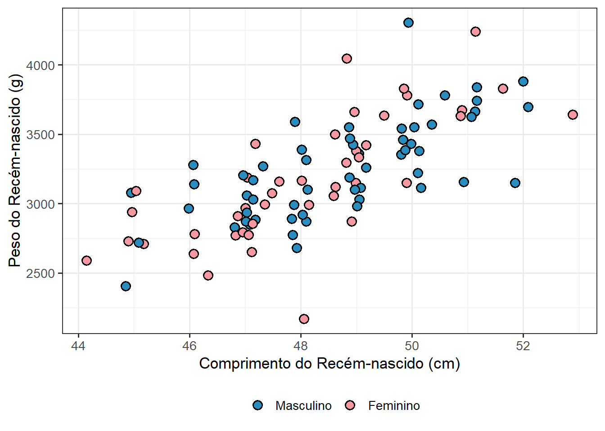
Atenção!
Se estiver usando shape que não aceita preenchimento (como 16 ou 19), então deve-se usar color = sexo e scale_color_manual().
8.5.3 Ajustando as cores de variáveis contínuas (Gradientes)
Se sua variável for numérica, você pode ajustar a transição de cores com funções da família scale_color_gradient() ou scale_fill_gradient(). Define-se o degradê manualmente: do menor peso (low) ao maior peso (high)
ggplot(data = dados,
mapping = aes(x = comp_rn, y = peso_rn, fill = renda)) +
geom_point(position = position_jitter(width = 0.2, height = 0),
shape = 21,
alpha = 0.9,
size = 3.5,
stroke = 0.7,
color = "gray30") +
labs(x = "Comprimento do Recém-nascido (cm)",
y = "Peso do Recém-nascido (g)",
fill = "Renda (SM)") +
scale_fill_gradient(low = "aliceblue", high = "darkblue") +
theme_bw(base_size = 13) +
theme(legend.position = "right") 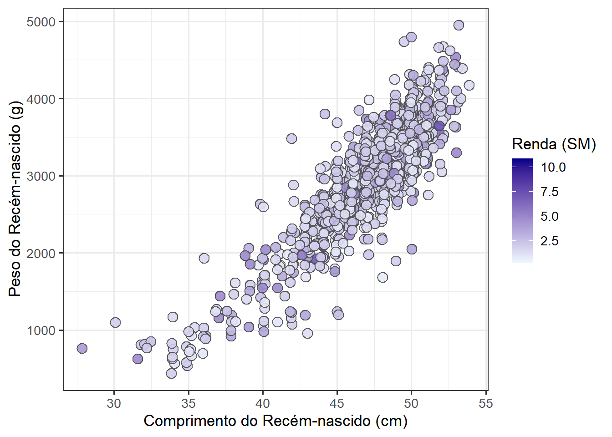
8.5.4 Paletas Prontas (Pacotes Extras)
Para usar paletas profissionais e esteticamente agradáveis rapidamente, pode-se recorrer a paletas de pacotes clássicos como o ggsci, RColorBrewer ou paletteer . Para criar paletas aleatórias e harmoniosas, existe um site bem popular que realiza essa função.
8.5.4.1 Pacote ggsci
O ggsci é um pacote que oferece uma coleção de paletas de alta qualidade inspiradas em cores usadas em revistas científicas, bibliotecas de visualização de dados, filmes de ficção científica e programas de TV. As paletas de cores no ggsci estão disponíveis como escalas ggplot2, Para todas usa-se as seguintes funções:
scale_color_nomedapaleta()escale_fill_nomedapaleta ().
Por exemplo, para a paleta do Lancet, usa-se para o preenchimento: scale_fill_lancet(); para o New England Journal of Medicine, scale_fill_nejm(); para o Journal of the American Medical Association, scale_fill_jama(); para o British Medical Journal, scale_fill_bmj(), etc. O pacote ggsci deve ser instalado e carregado para usar essas paletas. Para visualizar as opções do pacote ggsci acessar Scientific Journal and Sci-Fi Themed Color Palettes for ggplot2.
Como exemplo, será usado o código que gerou o gráfico da Figura 8.33 com alterações, usando a paleta do periódico British Medical Journal (BMJ).
ggplot(data = dados_100,
mapping = aes(x = comp_rn, y = peso_rn, fill = sexo)) +
geom_point(position = position_jitter(width = 0.2, height = 0),
shape = 21,
alpha = 1,
size = 4,
stroke = 1) +
labs(x = "Comprimento do Recém-nascido (cm)",
y = "Peso do Recém-nascido (g)",
fill = "") +
scale_fill_bmj() +
theme_bw(base_size = 13) +
theme(legend.position = "bottom")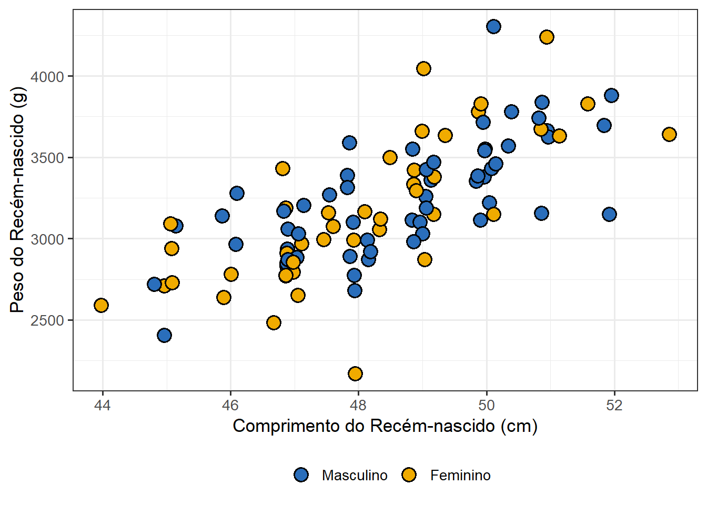
As cores usadas são agora as da paleta do BMJ (Figura 8.35). A paleta do BMJ pode ser visualizada com a função show_col(pal_bmj())(Figura 8.36) do pacote scales.
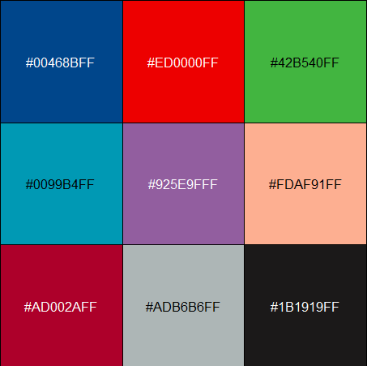
8.6 Desafio
Dica
Tente visualizar outras paletas do pacote ggsci, usando a função show_col() do pacote scales. Por exemplo:
show_col(pal_jama())
show_col(pal_lancet())
show_col(pal_aaas())
show_col(pal_simpsons())
8.6.0.1 Pacote RColorBrewer
O RColorBrewer (7) é um dos pacotes mais famosos e utilizados do R para escolha de esquemas de cores. Ele não cria cores aleatórias: ele implementa as paletas criadas pela geógrafa Cynthia Brewer (8), que foram desenhadas especificamente para mapas e gráficos, garantindo excelente contraste visual e legibilidade.
Para visualizar (Figura 8.37) as paletas do pacote RColorBrewer, usar:
par(mar=c(2, 4, 2, 3)) # modifica o tamanho das margens
display.brewer.all()
par(mar=c(5.1, 4.1, 4.1, 2.1)) # retorna ao tamanho original das margens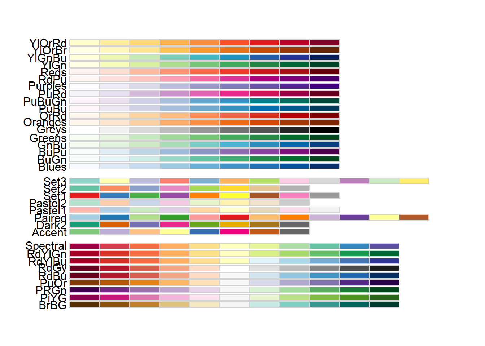
Como exemplo (Figura 8.38), será repetido o gráfico da Figura 8.35 com uma paleta de cores do RColorBrewer, Pastel2.
ggplot(dados_100,
aes(x = comp_rn, y = peso_rn, fill = sexo)) +
geom_point(position = position_jitter(width = 0.2, height = 0),
shape = 21,
color = "gray20",
size = 4,
stroke = 1) +
scale_fill_brewer(palette = "Pastel2") +
labs(title="",
x = "Comprimento do Recém-nascido (cm)",
y = "Peso do Recém-nascido (g)",
fill = "") +
theme_bw(base_size = 13) +
theme(legend.position = "bottom")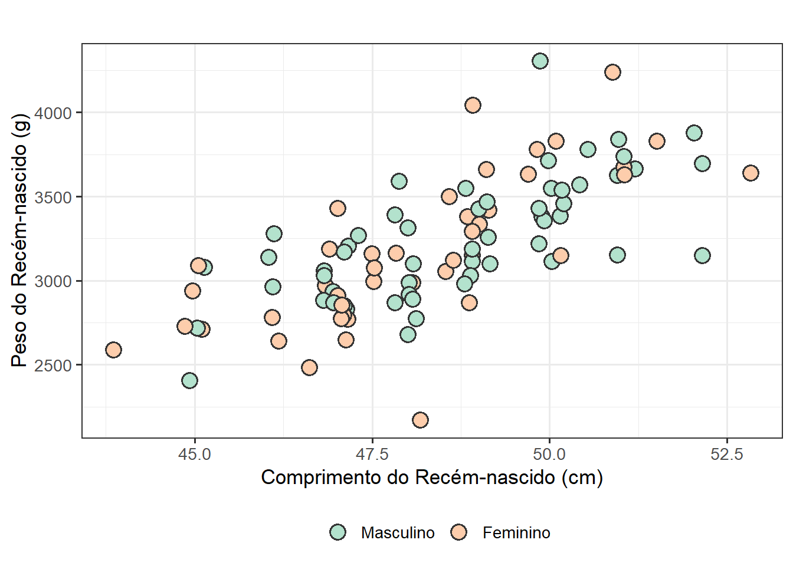
8.6.0.2 Paleta paletteer
O pacote paletteer no R reúne um grande número de paletas de cores de diversos pacotes do R dedicados a cores. Fornece uma interface simples e consistente para acessar essas paletas, facilitando o trabalho. Oferece mais de 2000 paletas de cores de vários pacotes do R, como ggthemes, wesanderson, lisa, scico, entre outros. Tudo acessível por uma interface simples e poderosa, facilitando a criação de visualizações bonitas e informativas (9).
Todas as paletas podem ser acessadas a partir das três funções paletteer_c(), paletteer_d() e paletteer_dynamic() usando a sintaxe: nome_do_pacote::nome_da_paleta 21.
21 A função paletteer_c() é usada para variáveis contínuas; a paletteer_d() para variáveis categóricas e a paletteer_dynamic() é pouco usada, mas serve para paletas que mudam conforme o número de categorias.
Paletas discretas são paletas com um número fixo de cores. Elas são úteis para visualizar dados categóricos. Por exemplo, uma paleta que vai do vermelho ao laranja, do verde ao preto é uma paleta discreta.
Exemplo com a paleta nbapalettes::supersonics_holiday, mapeando os pontos em um tamanho maior (size = 7) para chamar atenção das cores.
ggplot(dados_100,
aes(x = comp_rn, y = peso_rn, fill = sexo)) +
geom_point(position = position_jitter(width = 0.2, height = 0),
shape = 21,
color = "gray20",
size = 5,
stroke = 1.5) +
scale_fill_paletteer_d("nbapalettes::supersonics_holiday") +
labs(title="",
x = "Comprimento do Recém-nascido (cm)",
y = "Peso do Recém-nascido (g)",
fill = "") +
theme_bw(base_size = 13) +
theme(legend.position = "bottom") 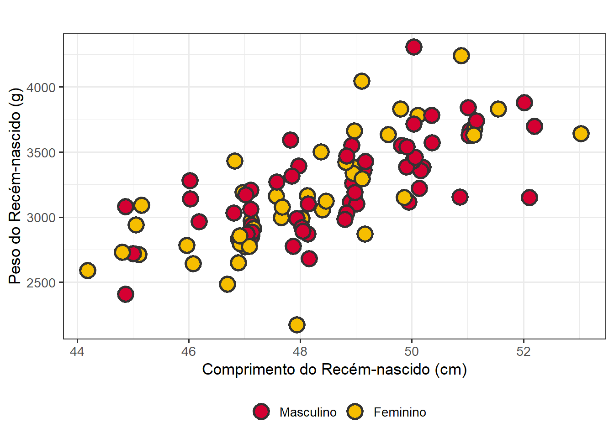
Para uma visualização rápida de algumas paletas com o paleteteer, pode-se digitar em um script do RStudio o seguinte comando:
paletteer::paletteer_d("lisa::FridaKahlo")<colors>
#121510FF #6D8325FF #D6CFB7FF #E5AD4FFF #BD5630FF paletteer::paletteer_d("nbapalettes::supersonics_holiday")<colors>
#D50032FF #F6BE00FF #00573FFF #010101FF No console, aparecerão as cores com os códigos hexadecimais. Se as cores não estiverem visíveis como aqui, então acesse o website HTML Color Codes, onde facilmente é feita essa conversão.
Isto é apenas o caminho, existem uma enorme quantidade de paletas (mais de 2500 paletas!) e o paletteer é uma espécie de facilitador para se ter acesso a elas. Escolher as cores para um gráfico é uma tarefa desafiadora e demorada, o que geralmente leva à insatisfação. Em um dos seus sites educacionais Yan Holtz disponibiliza um localizador de paletas de cores que torna este trabalho mais palatável.
8.7 Outras manipulações nos gráficos
8.7.1 Facetamento
Na Seção 8.5, foi mostrado como comparar grupos, através da cor, usando as estéticas fill ou color 22. Outra técnica para diferenciar grupos em um gráfico é o facetamento. O facetamento cria gráficos dividindo os dados em subconjuntos e exibindo o mesmo gráfico para cada subconjunto (Figura 8.40) . Para facetar um gráfico, basta adicionar uma especificação de facetamento com a função facet_wrap(), que recebe o nome de uma variável categórica precedido pelo sinal gráfico til (~).
22 Além da cor, os grupos em um gráfico também podem ser diferenciados por meio das estéticas shape e size. Para isso, substituir o mapeamento fill = sexo por shape = sexo ou size = sexo.
23 Além da função específica para o facetamento, a cor agora é determinada com preenchimento dos pontos ( fill=”tomato”) colocado dentro do geom_point() .
Como exemplo prático, será aproveitado o código que gerou a Figura 8.32 com pequenas alterações 23 e aplicação do facet_wrap().
ggplot(data = dados_100,
mapping = aes(x = comp_rn, y = peso_rn)) +
geom_point(position = position_jitter(width = 0.2, height = 0),
fill = "tomato",
shape = 21,
alpha = 1,
size = 3,
stroke =1) +
labs(x = "Comprimento do Recém-nascido (cm)",
y = "Peso do Recém-nascido (g)") +
theme_bw(base_size = 13) +
theme(legend.position = "bottom") +
facet_wrap(~sexo)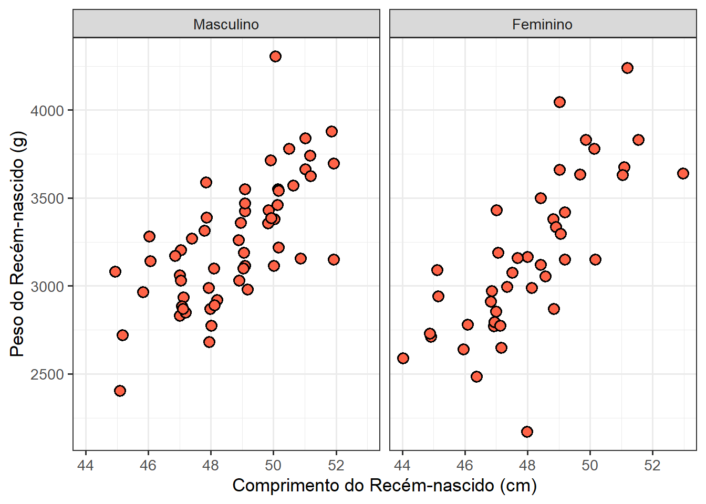
O facetamento (Figura 8.40) permite verificar que a relação entre o comprimento e o peso dos recém-nascidos é nitidamente linear e semelhante entre os sexos.
8.7.2 Reta de Regressão
A função geom_smooth() é uma forma geométrica do ggplot2 usada para visualizar tendências ou padrões entre duas variáveis numéricas. Ele adiciona uma linha suavizada ao gráfico, que ajuda a entender a relação entre os dados , especialmente quando há muitos pontos ou quando a relação não é linear. O geom_smooth() ajusta uma curva aos dados, usando métodos estatísticos. A regressão linear usa method = “lm” 24. Por padrão, exibe o intervalo de confiança (veja Capítulo 12), que mostra a incerteza da estimativa da reta 25. Esta técnica ajuda a identificar padrões que não podem ser visíveis apenas com os pontos brutos.
24 Outros métodos: “loess”, “glm”, “gam”. Para mais informações, consulte a ajuda ?loess, ?gam ou ?glm ou NULL, onde a escolha é automática: usa “loess” para < 1000 pontos e “gam” para > 1000.
25 Se não houver interesse no aparecimento da área ao redor da reta de regressão, o intervalo de confiança, mudar o argumento se = FALSE.
26 A Figura 8.40 mostrou que a correlação não parece diferir entre os sexos.
O código da figura Figura 8.32 será tomado como base sem a divisão por sexo 26, com modificações, para gerar a reta de regressão.
set.seed(234)
ggplot(dados_100,
aes(x = comp_rn, y = peso_rn)) +
geom_point(position = position_jitter(width = 0.2, height = 0),
fill = "tomato",
shape = 21,
alpha = 1,
size = 3,
stroke =1) +
geom_smooth(method = "lm",
se =TRUE,
color= "darkred") +
xlab("Comprimento do Recém-nascido (cm)") +
ylab("Peso do Recém-nascido (g)") +
theme_bw(base_size = 13)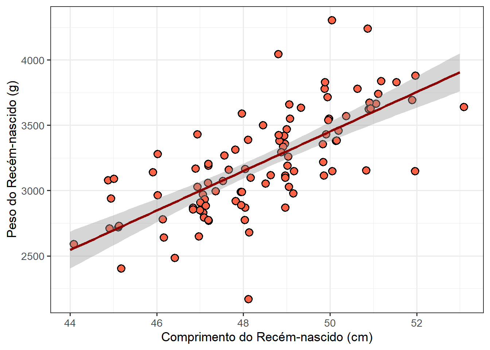
O gráfico da Figura 8.41, mostra um ajuste dos pontos a uma reta, com inclinação ascendente, ou seja uma correlação positiva, à medida que o comprimento do recém-nascido aumenta, aumenta o seu peso ao nascer.
A distância dos pontos à reta é o erro ou resíduo. A melhor reta ajustada é aquela em que a soma dos quadrados da distância de cada ponto (soma dos quadrados residual) em relação à reta é minimizada (veja também Capítulo 18).
8.7.3 Mudando o nome dos eixos, o nome e a ordem dos rótulos
Para modificar o nome dos eixos, a recomendação, como visto na Seção 8.4.1.3, é usar a função labs() como nos gráficos a partir da Figura 8.6 .
O nome e ordem dos rótulos podem ser modificados, usando a função scale_x_discrete() com os argumentos limits = que coloca os níveis na ordem desejada e labels = que coloca os novos nomes27 na ordem estabelecida pelo argumento limits =.
27 Pode-se aproveitar aqui para trocar os nomes ou , simplesmente, corrigir acentuação que, às vezes, não foi colocada no dataframe.
Observando, por exemplo, o gráfico da Figura 8.23, onde se usou a paleta do NEJM, verifica-se que os rótulos do eixo x estão como: fumante_leve, fumante_moderada, fumante_pesada e nao_fumante. Esses nomes não estão prontos para publicação e o ideal é que sejam modificados para Leve, Moderado, Pesado e Não, uma vez que o título do eixo x será modificado para Tabagismo Materno.
Aproveitando, pode-se modificar a ordem das categorias, colocando, por exemplo, as fumantes pesadas como primeira categoria na Figura 8.42, a seguir as fumantes moderadas, leves e não fumantes para ter uma lógica decrescente da intensidade de tabagismo materno.
# Cálculo das proporções de tabagismo em cada uma das categorias para adicionar ao gráfico
prop_fumo <- dados |>
group_by(categFumo) |>
summarise(n = n(), .groups = "drop") |>
mutate(
total_faixa = sum(n),
proporcao_fumo = n / total_faixa)
# Construção do gráfico
ggplot(data = dados, aes(x = categFumo, fill = categFumo)) +
geom_bar(position = "dodge", color = "black") +
scale_fill_nejm() +
geom_text(data = prop_fumo,
aes(x = categFumo,
y = n,
label = scales::percent(proporcao_fumo, accuracy = 0.1)),
size = 4,
vjust = -0.5,
color = "black") +
labs(x = "Tabagismo Materno", y = "Frequência") +
scale_x_discrete(limits = c("fumante_pesada", "fumante_moderada",
"fumante_leve", "nao_fumante"),
labels = c("Pesado", "Moderado", "Leve", "Não")) +
scale_y_continuous(expand = expansion(mult = c(0, 0.1))) +
theme_bw(base_size = 13) +
theme(legend.position = "none")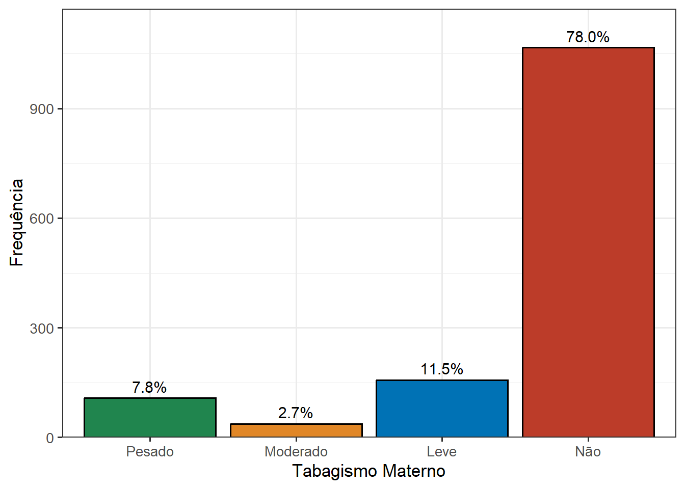
Na Figura 8.42, dentro do geom_text(), o argumento vjust = -0.5 posiciona o rótulo levemente acima do topo da barra. Por ser relativo ao tamanho do texto (e não à escala do eixo y), funciona independentemente dos valores dos dados.
8.7.4 Alterando o título e subtítulo do gráfico
Nem sempre necessários, o título, o subtítulo ou uma nota de rodapé podem ser adicionados ao gráfico através da função labs(), usada anteriormente para colocar rótulos nos eixos x e y. Além de argumentos para colocar rótulos nos eixos, a função labs() tem outros que permitem colocar título, subtítulo e nota de rodapé (caption).
Como exemplo, será plotado um gráfico com boxplots que ilustrem o impacto do tabagismo materno sobre o peso do recém-nascido. Os dados serão provenientes do dataframe dados_rnt (Seção 8.4.4).
Todos os argumentos da função labs() serão usados e, também, serão alterados, os nomes dos rótulos do eixo x, seguindo o modelo da Figura 8.42 O código do gráfico da Figura 8.43 vai ser atribuído a um objeto denominado bxp:
bxp <- ggplot(dados_rnt, aes(x = categFumo,
y = peso_rn,
fill = categFumo)) +
stat_boxplot(geom = "errorbar", width = 0.1) +
geom_boxplot() +
scale_fill_brewer(palette = "Pastel2") +
stat_summary(fun = "mean",
colour = "red",
size = 3,
geom = "point") +
labs(title = "Tabagismo Materno e Peso do Recém Nascido",
subtitle = "Maternidade do Hospital Geral de Caxias do Sul, 2008",
x = "Tabagismo Materno",
y = "Peso dos Recém-Nascidos (g)",
caption = "O ponto vermelho é a média de cada grupo") +
scale_x_discrete(limits = c("nao_fumante",
"fumante_leve",
"fumante_moderada",
"fumante_pesada"),
labels = c("Não", "Leve",
"Moderado", "Pesado")) +
theme_bw(base_size = 13) +
theme(legend.position = "none")
print(bxp)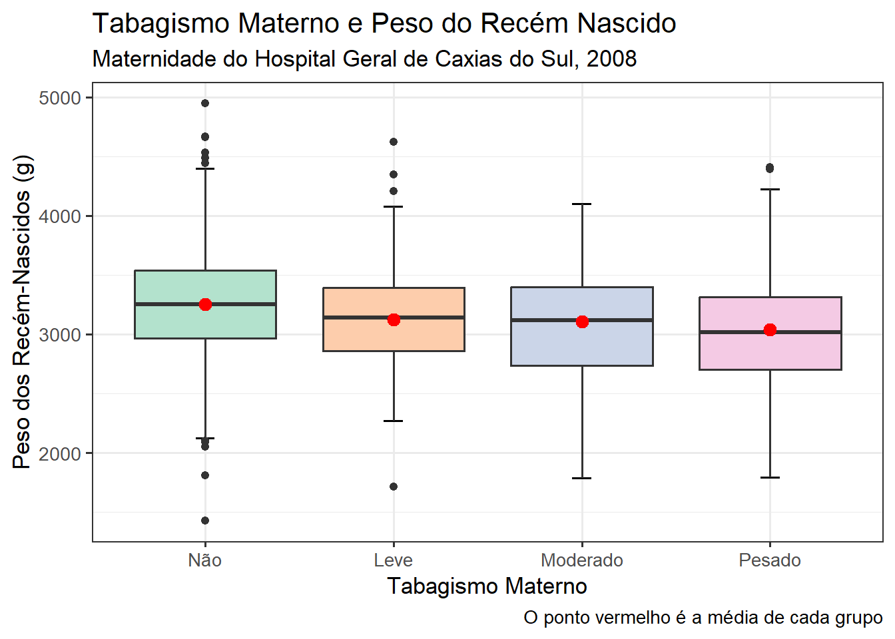
8.7.5 Modificação dos limites dos eixos
O pacote ggplot2 possui uma família de funções scale_ para modificar as propriedades referentes às escalas do gráfico. Como é possível ter escalas de números, categorias, cores, datas, entre outras, é disponibilizada uma função específica para cada tipo de escala.
Cada tipo fundamental é manipulado por uma das três funções construtoras de escala: continuous_scale(), discrete_scale() e binned_scale().
No gráfico da Figura 8.43, os pesos dos recém-nascidos estão dispostos em uma escala que varia a cada 1000 g. Para modificar esses limites, pode-se usar a função scale_y_continuous() para ter intervalos de 500 g.
O gráfico da Figura 8.43 foi designado para um objeto denominado bxp. Isto facilita o trabalho, pois não há necessidade de repetir todo o código que gerou o gráfico, apenas as modificações:
bxp +
theme(plot.title = element_text(size = 14,
face = "bold"),
plot.subtitle = element_text(size = 12,
face = "bold",
color = "darkgreen")) +
scale_y_continuous(breaks = seq(1000, 5000, 500))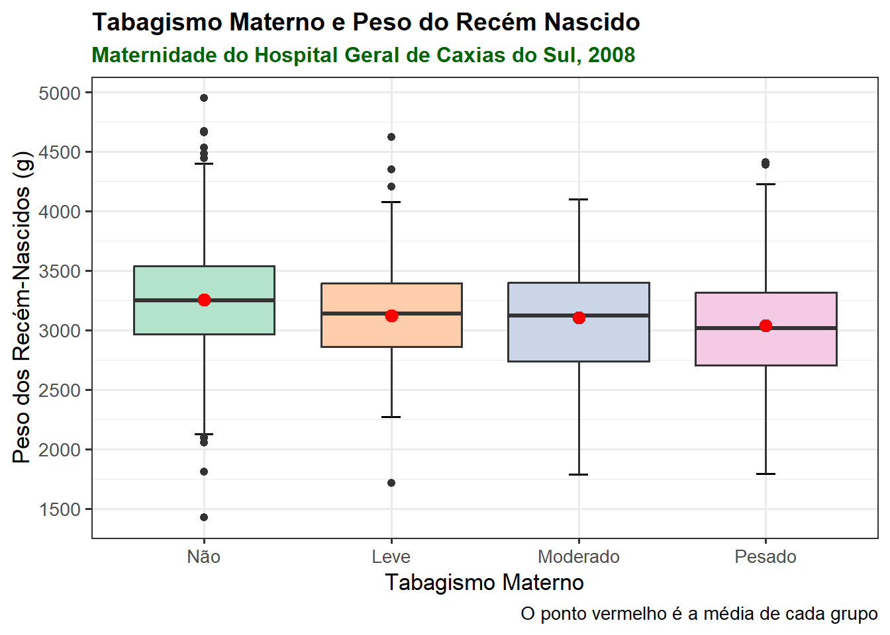
Junto com a modificação dos limites dos eixo da Figura 8.43, manipulou-se o título e subtítulo, usando a função theme() e foi aumentado o tamanho da fonte, usou-se negrito e a cor do subtítulo passou a ser “darkgreen”, gerando a Figura 8.44.
8.7.6 Modificação da expansão
Voltando aos gráficos de barra, todos, com exceção dos gráficos da Figura 8.26, Figura 8.27, Figura 8.28 e Figura 8.29 28 têm algo que incomoda ao autor: abaixo do valor 0 (zero) existe uma expansão, ou seja um espaço abaixo do 0. Isto, visualmente, é desagradável.
28 Nesses, foram realizadas modificações para eliminar o espaço abaixo de zero.
Para que as barras tenham início exatamente no 0 (zero), pode-se empregar a função scale_y_continuous() com o argumento expand = expansion(mult = c(0, 0.1)), significando que não se expande nada abaixo do 0 e se adiciona 10% do intervalo dos dados acima do máximo (independe da escala), criando uma margem superior. Essa estratégia funciona bem para gráficos de contagem. Comparar a Figura 8.45 com a Figura 8.22 para observar a diferença.
Atenção
Em gráficos de proporção, deve-se usar uma margem menor expand = expansion(mult = c(0, 0.06))
O rótulos do eixo y também foram corrigidos.
ggplot(data = dados) +
geom_bar(aes(x = categFumo,
y = after_stat(count/sum(count)),
fill = categFumo))+
scale_y_continuous(labels = percent_format(accuracy = 0.1,
decimal.mark = ","),
expand = expansion(mult = c(0, 0.10))) +
scale_x_discrete(limits = c("nao_fumante",
"fumante_leve",
"fumante_moderada",
"fumante_pesada"),
labels = c("Não", "Leve",
"Moderado", "Pesado")) +
labs(x = "Tabagismo Materno",
y = "Proporção por categoria") +
theme_bw(base_size = 13) +
theme(legend.position = "none")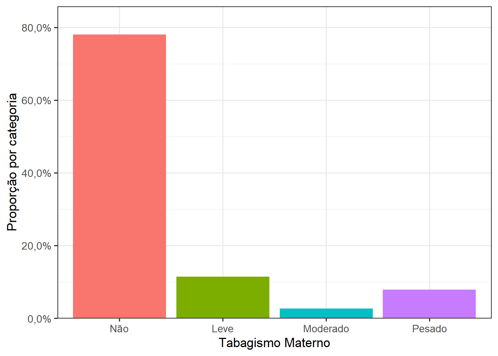
8.8 Ajustando o layout e as margens no ggplot2
Usando o gráfico da Figura 8.7, repetido aqui e designando-o a um objeto com nome de gdisp:
gdisp <- ggplot(data = dados_100,
aes(x = comp_rn, y = peso_rn)) +
geom_point(position = position_jitter(width = 0.2, height = 0),
fill ="tomato",
shape = 21,
alpha = 1,
size = 3,
stroke =1) +
labs(x = "Comprimento do Recém-nascido (cm)",
y = "Peso do Recém-nascido (g)") +
theme_bw(base_size = 13)
print(gdisp)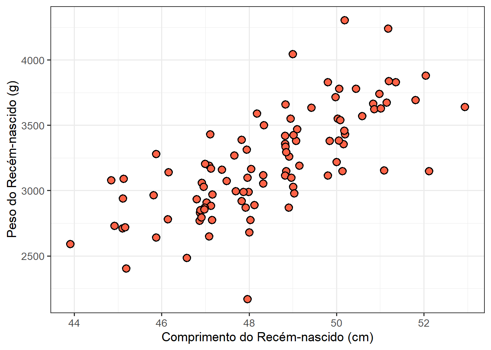
O objeto gdisp contém o gráfico de dispersão e pode ser modificado sem ter que digitar todos os comandos novamente. O código usada para ajustar o espaçamento interno (as margens) ao redor de todo o gráfico é:
gdisp +
theme(plot.margin = margin(t = 60, r = 60, b = 60, l = 60))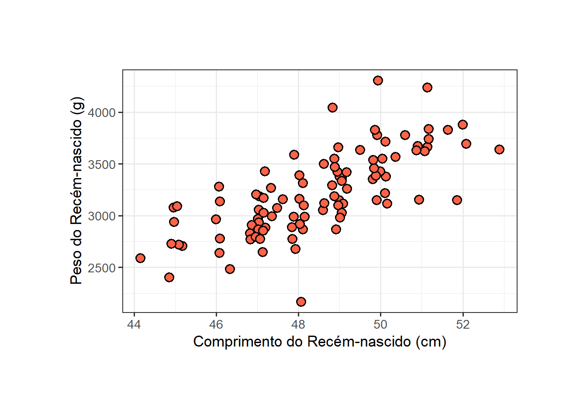
Ele adiciona uma “área de respiro” (uma borda invisível) entre os elementos do gráfico e a borda externa da imagem final. Isso é extremamente útil para evitar que títulos compridos sejam cortados, que os nomes dos eixos fiquem colados na borda ou simplesmente para dar uma estética mais elegante e equilibrada ao layout.
Como funciona a sintaxe:
A função margin() segue uma regra padrão no ggplot2 chamada TRBL . Ela define as margens no sentido horário, começando do topo:
t(\(\textbf{T}\text{op}\)): Margem do Topo (superior).r(\(\textbf{R}\text{ight}\)): Margem da Direita.b(\(\textbf{B}\text{ottom}\)): Margem de Baixo (inferior).l(\(\textbf{L}\text{eft}\)): Margem da Esquerda.
Define as margens em pontos 29. Um ponto (pt) equivale a 1/72 de polegada, ou aproximadamente 0,35 milímetros. É a mesma unidade usada para definir tamanho de fonte. portanto, quando se observa um valor de 80, significa que o gráfico terá 80 pontos de margem no topo, à direita, na base e à esquerda. Isto dá aproximadamente 28 mm de espaço em cada lado.
29 A margem pode ser definida também em centímetros (cm), usando o mesmo comando, mas especificando que é em “cm”. Por exemplo, para aumentar 2 cm em todos os lados: theme(plot.margin = unit(c(2, 2, 2, 2), "cm"))
Dica prática
Ao exportar gráficos para PDF ou PNG e quiser controlar o layout com precisão (por exemplo, para publicação), ajustar as margens com margin() é essencial para evitar que elementos fiquem cortados ou apertados demais.
8.9 Pacote ggpubr
O pacote ggpubr é uma extensão do ggplot2 no R. Ele foi criado por Alboukadel Kassambara (10) com um objetivo principal: facilitar a criação de gráficos prontos para publicação científica, especialmente para pesquisadores e analistas que acham a sintaxe nativa do ggplot2 muito complexa ou demorada.
As principais vantagens e funcionalidades do pacote:
8.9.1 Sintaxe simplificada
O ggplot2 é incrivelmente poderoso, mas exige muitas linhas de código para ajustar detalhes estéticos. O ggpubr oferece funções embrulhadas (wrapper functions) que criam gráficos complexos com apenas uma linha de código.
ggboxplot()para gráficos de caixagghistogrampara histogramasggbarplot()para gráficos de barraggline()para gráficos de linhaggscatter()para gráficos de dispersãoggviolin()para gráficos de violino
8.9.2 Testes estatísticos automáticos
Funções como stat_compare_means() e stat_cor() adicionam valores p, correlações e resultados de testes diretamente no gráfico.
8.9.3 Temas prontos para publicação
Esqueça o aborrecimento de formatar eixos, fundos e fontes para submissão de artigos. O pacote traz o theme_pubr(), que limpa o gráfico automaticamente, removendo fundos cinzas desnecessários e ajustando as fontes para os padrões exigidos por revistas científicas (como Nature, Science, Lancet, etc.).
8.9.4 Paletas de Cores Científicas
O pacote integra paletas de cores populares de jornais de prestígio e softwares de análise através do argumento palette. Você pode usar cores padrão da Nature ("npg"), AAAS ("aaas"), Lancet ("lancet"), ou paletas fáceis para daltônicos.
8.9.5 Organização de Múltiplos Gráficos
Em artigos, é muito comum precisar juntar vários gráficos em uma única figura (Fig 1A, 1B, 1C). O ggpubr resolve isso de forma brilhante com a função ggarrange(), que é mais intuitiva que o grid.arrange nativo, permitindo inclusive criar uma legenda única para todos os gráficos combinados.
8.9.6 Exemplo prático para comparação
A Figura 8.17 exibe a comparação do comprimento dos recém-nascidos a termo por sexo e mostra a distribuição dos grupos com o uso do jitter. Será repetido este gráfico, usando o ggboxplot() do ggpubr:
bp <- ggboxplot(dados_100,
x = "sexo",
y = "comp_rn",
fill = "sexo",
palette = c("#76CEF7", "#FFA2A4"),
bxp.errorbar = TRUE,
bxp.errorbar.width = 0.15,
legend = "none")
bp +
geom_jitter(color="#7A7A7A",
size=1.5,
width = 0.08,
height = 0) +
stat_compare_means(method = "t.test",
label.y = 55,
label.x = 0.7) 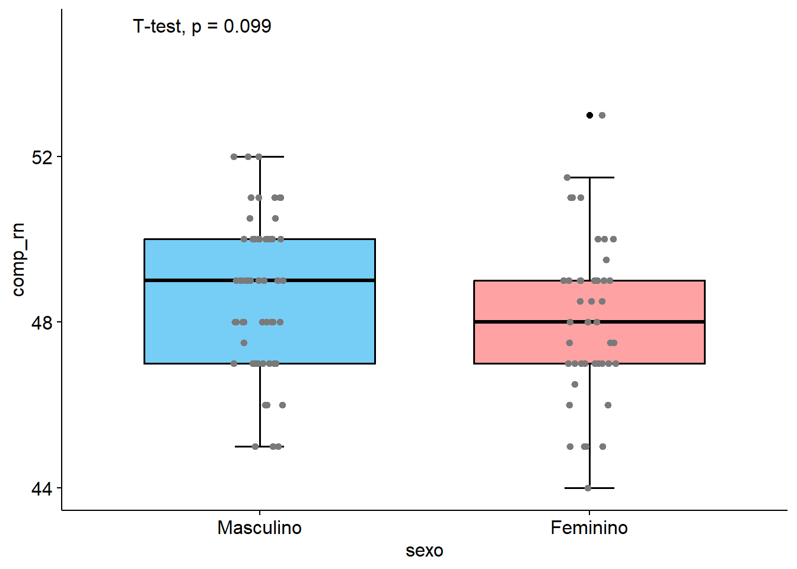
Como se observa na Figura 8.47, os gráficos são praticamente idênticos. Atente que primeiro foram construídos os boxplots e atribuídos a um objeto bp. Após, foram adicionadas camadas para o jitter (usando o ggplot2) e uma comparação entre as médias com um teste t independente, que exibiu um valor p = 0.26, mostrando não haver uma diferença estatisticamente significativa entre os grupos (valor p > 0.05).30
30 Veja também Capítulo 14.
Para maiores informações sobre a construção de gráficos com este interessante pacote consulte aqui.
Referências
1.
Wickham H. A layered grammar of graphics. Journal of Computational and Graphical Statistics. 2010;19(1):3–28.
2.
Wickham H, Navarro D, Pedersen TL. ggplot2: Elegant Graphics for Data Analysis (3e) [Internet]. 2023. Disponível em: http://www.new.pmean.com/ggplot2-book/
3.
Field A, Miles J, Field Z. Exploring data with graphs. Em: Discovering statistics using R. Sage Publications, Ltd; 2012. p. 117.
4.
McGill R, Tukey JW, Larsen WA. Variations of box plots. The american statistician. 1978;32(1):12–6.
5.
Peres FF. Gráficos dinamite: usá-los ou não, eis a questão [Internet]. Fernanda Peres: Estatística Aplicada à Vida Real. 2022. Disponível em: https://fernandafperes.com.br/blog/graficos-dinamite/
6.
Holtz Y. Dealing with color in ggplot2. https://r-graph-gallery.com/ggplot2-color.html; 2025.
7.
Neuwirth E. RColorBrewer: ColorBrewer Palettes [Internet]. 2022. Disponível em: https://CRAN.R-project.org/package=RColorBrewer
8.
Harrower M, Brewer CA. ColorBrewer.org: An Online Tool for Selecting Colour Schemes for Maps. The Cartographic Journal. 2003;40(1):27–37.
9.
Hvitfeldt E. Use any color palette with paletteer [Internet]. The R Graph Gallery. 2024. Disponível em: https://r-graph-gallery.com/package/paletteer.html
10.
Kassambara A. ggpubr: ’ggplot2’ Based Publication Ready Plots [Internet]. 2025. Disponível em: https://CRAN.R-project.org/package=ggpubr